Fuzzy Extractors are Practical
← → navigatechuyển slide · L EN/VI · T themegiao diện · M contentsmục lục · F fullscreentoàn màn hình
ContentsNội dung
Introduction & research contextGiới thiệu và bối cảnh nghiên cứu
105 bits of security, up to 92 % true accept rateMức bảo mật 105 bit, TAR đến 92%
| SystemHệ thống | EnrolẢnh đăng ký | AuthẢnh xác thực | SecurityBảo mật | TAR |
|---|---|---|---|---|
| ClearEyes | 1 | 1 | 105 bit | 64% |
| ClearEyes-M | 3 | 2 | 105 bit | 92% |
- The paper builds a system that derives a cryptographic key directly from the iris, using a fuzzy extractor to absorb the differences between captures.Paper xây dựng hệ thống sinh khoá mật mã từ mống mắt, dùng fuzzy extractor để xử lý khác biệt giữa các lần chụp.
- TAR (True Accept Rate): the share of genuine users that are accepted, under the paper's evaluation protocol.TAR (True Accept Rate): tỉ lệ chấp nhận thành công người dùng thật, theo giao thức đánh giá của paper.
- In BTP terms: biometric cryptosystem → key generation → fuzzy extractor.Trong phân loại BTP: biometric cryptosystem → key generation → fuzzy extractor.
- The 105 bits rest on an accurate min-entropy estimate and on the system's cryptographic assumptions. Part 5 explains how it is measured (EntTest).Con số 105 bit dựa trên ước lượng min-entropy chính xác và các giả định mật mã của hệ thống. Phần 5 giải thích cách đo (EntTest).
The headline is 105 bits with TAR 92 % — but that TAR needs the multi-reading configuration.Kết quả nổi bật là 105 bit cùng TAR 92% — nhưng TAR này cần cấu hình nhiều ảnh.
[P, Abstract, §1.2, Table 1]
The gap between biometric matching and secure key derivationKhoảng cách giữa xác thực sinh trắc và sinh khoá an toàn
- A biometric system stores enrolment data to compare with new readings — and that data can leak information about the user's biometric.Hệ thống sinh trắc lưu dữ liệu đăng ký để so với lần đo mới — dữ liệu này có thể làm lộ thông tin sinh trắc của người dùng.
- A biometric cannot be changed like a password: a leaked iris cannot simply be "reset". Prior work recovers iris information and images from templates (P-ref 1, 3, 4), so a template is not harmless data.Sinh trắc khó thay đổi như mật khẩu: lộ thông tin mống mắt thì không thể "đổi mống mắt". Các công trình trước đã khôi phục thông tin/ảnh iris từ template (P-ref 1, 3, 4), nên template không phải dữ liệu vô hại.
- Deployed systems add protection such as a TEE (Trusted Execution Environment), which needs dedicated hardware and a secure implementation.Hệ thống triển khai thường thêm cơ chế như TEE (Trusted Execution Environment) — đòi hỏi phần cứng và triển khai an toàn.
- Two captures of one eye give different vectors, so hashing a vector directly does not reproduce the same key.Hai ảnh của một mắt cho các vector khác nhau, nên băm trực tiếp từng vector không bảo đảm ra cùng khoá.
- Fuzzy extractor: create a key and helper data at enrolment; a close-enough sample plus the helper data rebuild the key. Security should hold even when the helper data is public, under the system's model and assumptions.Fuzzy extractor: tạo khoá và helper data khi đăng ký; mẫu đủ gần cùng helper data tái tạo khoá. Bảo mật vẫn giữ khi helper data công khai, dưới mô hình và giả định của hệ thống.
Stores reference data → must protect the biometric information inside it.Lưu dữ liệu tham chiếu → phải bảo vệ thông tin sinh trắc trong dữ liệu đăng ký.
Stores helper data → must be both recoverable for the owner and secure against everyone else.Lưu helper data → phải vừa khôi phục được cho chủ nhân, vừa an toàn trước người khác.
The task: rebuild the same key from noisy data, while staying secure when the helper data leaks.Bài toán là tái tạo được cùng khoá từ dữ liệu có nhiễu, đồng thời giữ bảo mật khi dữ liệu hỗ trợ bị lộ.
[P, Abstract, §1] · [P-ref 1, 3, 4]
Code-offset is capped by entropy and the cost of error correctionCode-offset bị giới hạn bởi entropy và chi phí sửa lỗi
- ent: entropy of the input; n: vector length; μ: bit error rate; H₂: binary entropy.ent: entropy của đầu vào; n: độ dài vector; μ: tỉ lệ lỗi bit; H₂: hàm entropy nhị phân.
- Intuition: after paying for error correction, enough entropy must remain to make a key.Trực giác: sau khi trả chi phí sửa lỗi, phải còn đủ entropy để sinh khoá.
- Example: n = 1,024, μ = 0.10 → H₂(0.10) ≈ 0.469 → err ≈ 1,024 × 0.469 ≈ 480 bits.Ví dụ: n = 1.024, μ = 0,10 → H₂(0,10) ≈ 0,469 → err ≈ 1.024 × 0,469 ≈ 480 bit.
| QuantityĐại lượng | Bits assumed i.i.d. uniformGiả định các bit i.i.d. đều | Realistic estimateƯớc lượng thực tế |
|---|---|---|
| Vector lengthĐộ dài vector | 1,024 | 1,024 |
| EntropyEntropy | 1,024 | < 250 |
| Error-correction costChi phí sửa lỗi | ≈ 480 | ≈ 480 |
| FEQual | ≈ 544 | 0 |
- i.i.d. = independent and identically distributed. Iris bits depend on each other, so vector length ≠ real entropy.i.i.d. = độc lập và cùng phân phối. Bit iris phụ thuộc nhau, nên độ dài vector không bằng entropy thực.
- PCA/ICA only reduce pairwise correlation; higher-order dependence can remain.PCA/ICA chỉ giảm tương quan theo cặp; phụ thuộc bậc cao vẫn có thể tồn tại.
- Code-offset is the mechanism behind fuzzy commitment from our previous talk.Code-offset chính là cơ chế của fuzzy commitment ở bài trước.
A 1,024-bit vector need not carry 1,024 bits of entropy; dependence between bits can eat the entropy a key needs.Vector 1.024 bit chưa chắc chứa 1.024 bit entropy; phụ thuộc giữa các bit có thể làm mất phần entropy cần cho sinh khoá.
[P, §1.0.1]
What the earlier security numbers rest onGiả định và cách đo bảo mật của các công trình trước
| WorkCông trình | BiometricSinh trắc | ReportedKết quả báo cáo | Main issueVấn đề chính |
|---|---|---|---|
| Zhang et al. | FaceKhuôn mặt | 45 bit, TAR 30% | Assumes independence between the nearest codeword and the coset — hard to verifyGiả định độc lập giữa codeword gần nhất và coset — khó kiểm chứng |
| Simhadri et al. | Iris | 32 bits self-reported, TAR 60 %Tự báo 32 bit, TAR 60% | Averages over a few (10) subsets; re-measured by the paper: 26 bits (still an average)Đo trung bình trên ít (10) tập con; paper đo lại còn 26 bit (vẫn theo trung bình) |
| Zhu et al. | Iris | Attack on sample-then-lockTấn công sample-then-lock | Exploits the lowest-entropy subsetKhai thác tập con có entropy thấp nhất |
- In sample-then-lock, many lockers protect one key — the attacker can concentrate on the easiest subset.Trong sample-then-lock, nhiều locker cùng bảo vệ một khoá — kẻ tấn công có thể tập trung vào tập con dễ đoán.
- A high average entropy does not remove a weak subset.Entropy trung bình cao không loại bỏ một tập con yếu.
- The paper fixes a step in the proof of Canetti et al. — it does not claim the theorem or all earlier results are wrong.Paper sửa một bước trong chứng minh của Canetti et al. — không khẳng định toàn bộ định lý hay mọi kết quả trước đều sai.
Three subsets: the average is ≈ 105 bits, but the attacker aims at the 100-bit one. (A teaching example — not the formal definition of average min-entropy.)Ba tập con: trung bình ≈ 105 bit, nhưng kẻ tấn công nhắm tập 100 bit. (Ví dụ sư phạm — không đồng nhất với định nghĩa average min-entropy.)
A security figure must account for the weakest subset and the distribution assumptions — the reported bit count alone is not enough.Đánh giá bảo mật phải tính đến tập con yếu nhất và giả định phân phối — chỉ nhìn số bit được báo cáo là chưa đủ.
[P, §1.1, Table 1] · [P-ref 45, 47–49]
Four contributions — and where we cover themBốn đóng góp và vị trí trong bài trình bày
| ContributionĐóng góp | Core ideaNội dung chính | Covered inTrình bày ở |
|---|---|---|
| Security analysisPhân tích bảo mật | Fixes the proof, tightens the bound and supports choosing global subsetsSửa chứng minh, siết bound và hỗ trợ việc chọn tập con toàn cục | §3.4c |
| ζ-sampling | Chooses subsets with a preference for bit quality; also evaluates sampling pairs of bitsChọn tập con có ưu tiên theo chất lượng bit; đánh giá cả cách lấy mẫu theo cặp | §3.4d, §5.3 |
| New feature extractorFeature extractor mới | Features designed for key derivation, with fewer bit errorsThiết kế đặc trưng phù hợp hơn cho sinh khoá, giảm lỗi bit | Part 4Phần 4 |
| Parameter study & experimentsPhân tích tham số và thực nghiệm | Picks the ClearEyes / ClearEyes-M configurationsXác định các cấu hình ClearEyes / ClearEyes-M | Part 5Phần 5 |
The paper improves the security analysis, the choice of subsets and the quality of the input features.Paper cải thiện cả cách phân tích bảo mật, cách chọn tập con và chất lượng đặc trưng đầu vào.
[P, Abstract, §1.2, §2.1]
System overviewTổng quan hệ thống
Iris image → feature vector → cryptographic keyẢnh mống mắt, vector đặc trưng và khoá mật mã
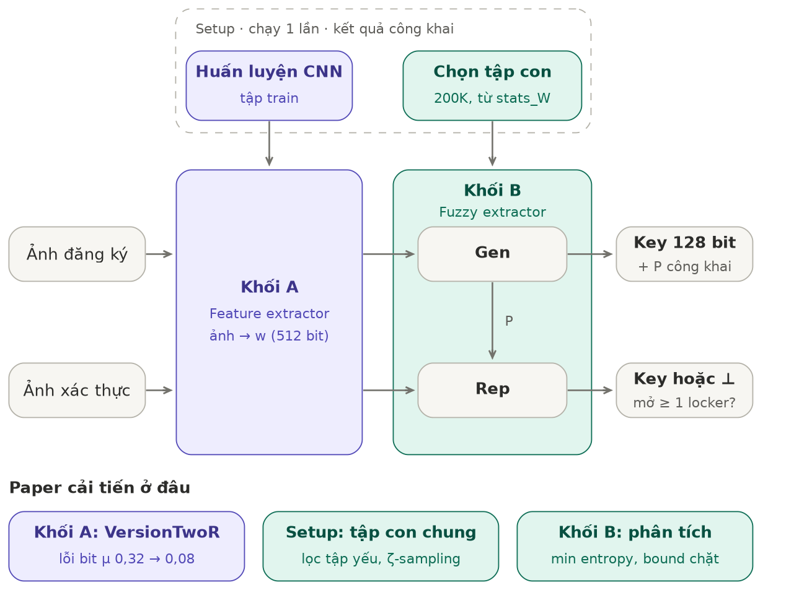
| ProcedureThủ tục | WhenKhi nào | RoleVai trò |
|---|---|---|
| Setup | System set-upKhởi tạo hệ thống | Choose and publish the shared subsetsChọn/công bố bộ tập con dùng chung |
| Gen | EnrolmentĐăng ký | Take w, output Key and helper data PNhận w, tạo Key và helper data P |
| Rep | AuthenticationXác thực | Take w′ and P, rebuild Key or fail (⊥)Nhận w′ và P, tái tạo Key hoặc thất bại ⊥ |
- Block A (CNN) turns the image into a 512-bit vector w (final version); Block B outputs a 128-bit Key.Khối A (CNN) biến ảnh thành vector w dài 512 bit (bản cuối); Khối B xuất Key dài 128 bit.
- w′ may differ from w because every capture is noisy.w′ có thể khác w vì ảnh chụp có nhiễu.
- What is kept for later authentication: the helper data and parameters. Rep needs no long-term copy of the raw template or the Key (they still exist while processing).Dữ liệu lưu để xác thực về sau: helper data và tham số. Rep không cần lưu lâu dài template thô hay Key (chúng vẫn tồn tại khi xử lý).
- 128 bits is the output length; 105 bits is the estimated security of the reported configuration.128 bit là độ dài đầu ra; 105 bit là mức bảo mật ước lượng của cấu hình báo cáo.
Block A produces low-error features; Block B uses them with the helper data to rebuild the key.Khối A tạo đặc trưng ít lỗi; khối B dùng đặc trưng đó và helper data để tái tạo khoá.
[P, §2, Fig. 1]
What changes in Block A and Block BCác thay đổi ở Khối A và Khối B
| ComponentThành phần | Prior system (as compared)Hệ thống trước (trong so sánh) | The paperCải thiện của paper |
|---|---|---|
| Block A — featuresKhối A — đặc trưng | Bit error rate ≈ 0.32Tỉ lệ lỗi bit ≈ 0,32 | ≈ 0.08 with the new extractor≈ 0,08 với extractor mới |
| Block B — analysisKhối B — phân tích | Average-based metricCách đo dựa trên trung bình | Weakest subset, tighter boundXét tập con yếu nhất, bound chặt hơn |
| Block B — subsetsKhối B — tập con | Per-user subsets at enrolmentTập con riêng khi đăng ký | Global subsets chosen at SetupTập con toàn cục, chọn tại Setup |
| Gen running timeHiệu năng Gen | ≈ 204 s≈ 204 giây | ≈ 0.2 s in the paper's table≈ 0,2 giây trong bảng của paper |
- ζ-sampling sits in Block B's subset choice and uses statistics on how stable each bit is.ζ-sampling nằm ở bước chọn tập con của Khối B, tận dụng thống kê độ ổn định bit.
- The new extractor sits in Block A and reduces noise before the fuzzy extractor sees it.Extractor mới nằm ở Khối A, giảm nhiễu trước khi fuzzy extractor xử lý.
AttackerKẻ tấn công why the key is hard to guessvì sao khó đoán được khoá
Honest userNgười dùng thật why the owner can still open itvì sao chủ nhân vẫn mở được
Then back to Block A to see how the input itself improves.Sau đó quay lại Khối A để xem đầu vào được cải thiện thế nào.
[P, §2.1, Table 1]
The fuzzy extractorFuzzy extractor
A fuzzy extractor tolerates noise without leaking the keyFuzzy extractor: chịu được nhiễu mà không lộ khoá
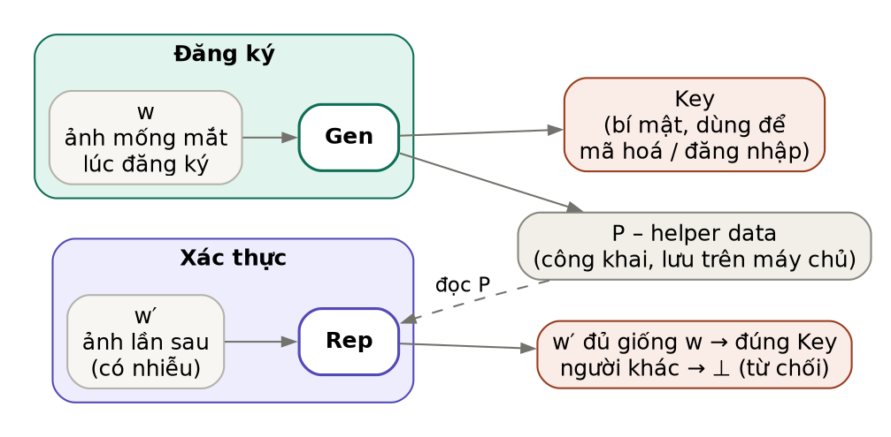
- Interface: Gen(w) → (Key, P); Rep(w′, P) → Key. P (helper data) is public, the Key stays secret.Giao diện: Gen(w) → (Key, P); Rep(w′, P) → Key. P (helper data) công khai, Key giữ bí mật.
- Two requirements: (1) correct — a similar-enough new image gives back the same Key; (2) secure — knowing P, the Key still looks random [P, Def. 2].Hai yêu cầu: (1) đúng — ảnh mới đủ giống thì tái tạo đúng Key; (2) an toàn — biết P vẫn không đoán được Key, Key trông như ngẫu nhiên [P, Def. 2].
- Classic construction (DRS 2004): a secure sketch (recover w from w′ and P) + a randomness extractor (turn a non-uniform w into a uniform Key).Cấu trúc kinh điển (DRS 2004): secure sketch (khôi phục w từ w′ và P) + randomness extractor (biến w không đều thành Key đều).
- Entropy loss: to correct errors, P must reveal part of w → remaining security ≈ entropy of w minus what P leaks. This is exactly the FEQual of §1.3.Entropy loss: muốn sửa lỗi thì P phải tiết lộ một phần w → bảo mật còn lại ≈ entropy của w trừ phần P làm lộ. Đây chính là FEQual ở §1.3.
- Two kinds of guarantee: information-theoretic (no assumptions, but always loses entropy to error correction) vs computational (relies on cryptographic assumptions and can beat that limit — Fuller, Meng, Reyzin 2013). This paper is computational.Hai kiểu bảo đảm: information-theoretic (không cần giả định, nhưng luôn mất entropy cho sửa lỗi) và computational (dựa vào giả định mật mã, có thể vượt giới hạn đó — Fuller, Meng, Reyzin 2013). Paper này theo hướng computational.
- Extra properties [P, §3.0.1]: reusable — enrolling several times stays secure (ClearEyes-M needs it); private — P reveals nothing about the iris; robust — detects a tampered P (not handled by the paper).Thuộc tính mở rộng [P, §3.0.1]: reusable — đăng ký nhiều lần vẫn an toàn (ClearEyes-M cần); private — P không lộ thông tin về mống mắt; robust — phát hiện P bị sửa (paper không xử lý).
Fuzzy extractor = tolerate noise without leaking the key; the usual price is entropy.Fuzzy extractor = chịu được nhiễu mà không lộ khoá; cái giá thường là entropy.
[P, §3, Def. 2, §3.0.1] · [P-ref 14] · Fuller, Meng, Reyzin, ASIACRYPT 2013 [P-ref 18]
Baseline 1 — correct the errors: code-offset / fuzzy commitmentBaseline 1 — hướng sửa lỗi: code-offset / fuzzy commitment
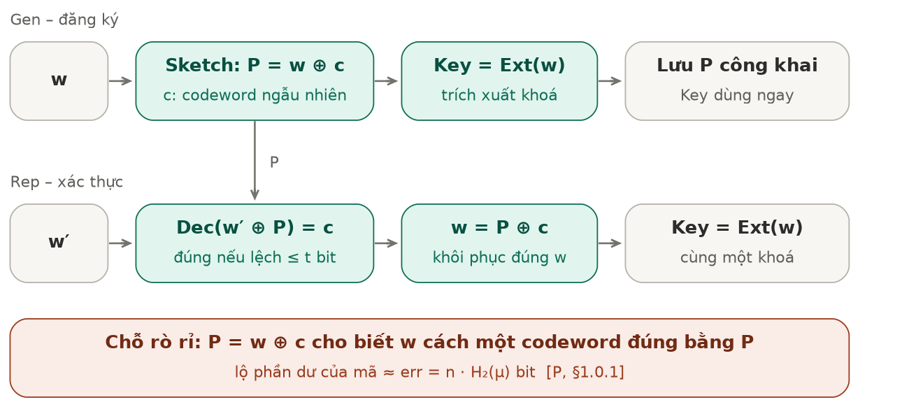
w′ = 100 (1 bit off) → w′ ⊕ P = 101 → majorityđa số = 111 = c ✓
- Origin: fuzzy commitment (Juels & Wattenberg, ACM CCS 1999), generalised by DRS 2004 into code-offset / secure sketch.Nguồn gốc: fuzzy commitment (Juels & Wattenberg, ACM CCS 1999), được DRS 2004 tổng quát hoá thành code-offset / secure sketch.
- Mechanism: pick a random codeword c, store P = w ⊕ c; at authentication Dec(w′ ⊕ P) = Dec(c ⊕ errors) = c, then w = P ⊕ c.Cơ chế: chọn codeword ngẫu nhiên c, lưu P = w ⊕ c; khi xác thực Dec(w′ ⊕ P) = Dec(c ⊕ lỗi) = c, rồi w = P ⊕ c.
- The leak: P says w sits exactly P away from a codeword → the attacker only has to guess c. The more errors the code can fix, the more it leaks (≈ err bits).Chỗ rò rỉ: P cho biết w cách một codeword đúng bằng P → kẻ tấn công chỉ còn phải đoán c. Mã sửa được càng nhiều lỗi thì càng lộ nhiều (≈ err bit).
- On the iris — Hao, Anderson, Daugman 2006: Hadamard + Reed–Solomon on a 2,048-bit iris code; keys up to 140 bits, 99.5 % correct (70 eyes). Later work estimates only ≈ 44 bits of real entropy and a high FRR on NIST-ICE.Áp dụng cho iris — Hao, Anderson, Daugman 2006: Hadamard + Reed–Solomon trên iris code 2.048 bit; khoá tới 140 bit, tái tạo đúng 99,5% (70 mắt). Nghiên cứu sau ước lượng entropy thực chỉ khoảng 44 bit, và FRR rất cao trên NIST-ICE.
- Lesson: key length ≠ security. For the iris (ent < 250, err ≈ 480) error correction gives FEQual = 0.Bài học: độ dài khoá ≠ mức bảo mật. Với iris (ent < 250, err ≈ 480), hướng sửa lỗi cho FEQual = 0.
Baseline 1 shows why correcting errors fails on the iris. The paper drops it and builds on baseline 2, changing four places.Baseline 1 cho thấy vì sao không thể sửa lỗi trên iris. Paper bỏ hẳn hướng đó, chọn baseline 2 làm nền rồi cải tiến ở 4 chỗ.
[P-ref 14] · [P, §1.0.1] · Juels & Wattenberg, CCS 1999 · Hao, Anderson, Daugman, IEEE Trans. Computers 2006 [P-ref 16]
Baseline 2 — sample, then lock: the base of ClearEyesBaseline 2 — lấy mẫu rồi khoá: nền của ClearEyes
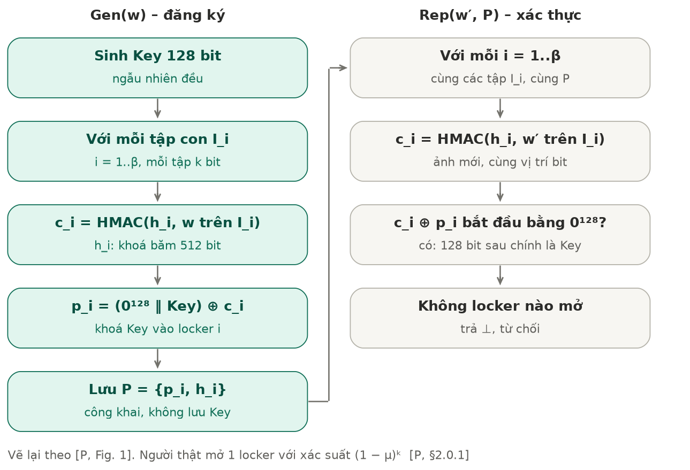
- Idea (Canetti et al. 2016/2021): stop correcting. Lock the same Key into β lockers, each opened by k sampled bits. One error-free subset is enough.Ý tưởng (Canetti et al. 2016/2021): không sửa lỗi nữa. Khoá cùng một Key vào β locker, mỗi locker mở bằng k bit lấy mẫu. Chỉ cần một tập con không dính lỗi.
- Digital locker = HMAC-SHA256 [P, §4.0.1]: a box that returns the Key only for the right input; a 0¹²⁸ prefix tells a correct opening.Digital locker = HMAC-SHA256 [P, §4.0.1]: hộp chỉ trả Key khi đưa đúng giá trị; dấu 0¹²⁸ để nhận biết mở đúng.
- Gen: cᵢ = HMAC(hᵢ, wIᵢ); pᵢ = (0¹²⁸ ‖ Key) ⊕ cᵢ; store P = {pᵢ, hᵢ}.Gen: cᵢ = HMAC(hᵢ, wIᵢ); pᵢ = (0¹²⁸ ‖ Key) ⊕ cᵢ; lưu P = {pᵢ, hᵢ}.
- Rep: recompute cᵢ with w′; if the first 128 bits of cᵢ ⊕ pᵢ are 0 → return the last 128 (the Key). No locker opens → ⊥.Rep: tính lại cᵢ với w′; nếu 128 bit đầu của cᵢ ⊕ pᵢ bằng 0 → trả 128 bit sau (Key). Thử hết β locker mà không mở → ⊥.
- Large k → hard to guess, but hard to open too → needs a large β.k lớn → khó đoán nhưng cũng khó mở → cần β lớn.
- Simhadri et al. 2019 used this on the iris with k = 43, μ = 0.32 — the system the paper compares against directly.Simhadri et al. 2019 áp dụng cho iris với k = 43, μ = 0,32 — bản triển khai mà paper so sánh trực tiếp.
The paper keeps this mechanism intact — and changes four places.Paper giữ nguyên cơ chế này nhưng thay 4 chỗ.
[P, §2.0.1, §2.1.2, §4.0.1, Fig. 1] · [P-ref 19, 45, 48]
Four improvements on sample-then-lockBốn cải tiến của paper trên sample-then-lock
[P, §2.1]
(a) Choosing subsets: from Gen to Setup(a) Chọn tập con: từ Gen sang Setup
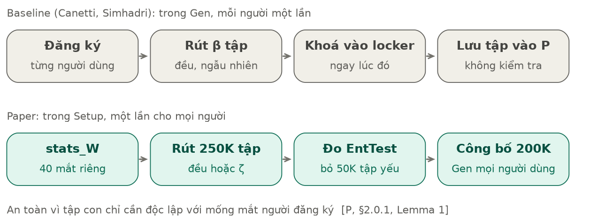
- Why it stays secure: the subsets only need to be independent of the enrolee's iris [P, §2.0.1, Lemma 1].Vì sao vẫn an toàn: tập con chỉ cần độc lập với mống mắt của người đăng ký [P, §2.0.1, Lemma 1].
- Benefit: weak subsets are removed before anyone uses them, and Gen gets lighter — no subsets to draw per user.Lợi ích: tập yếu bị loại trước khi có ai dùng; Gen nhẹ hơn vì không phải rút tập con cho từng người.
[P, §2.0.1, §2.1.1–2.1.2, Lemma 1]
(b) Correctness: from a Hamming threshold to a probability over real readings(b) Tính đúng: từ ngưỡng Hamming sang xác suất trên ảnh thật
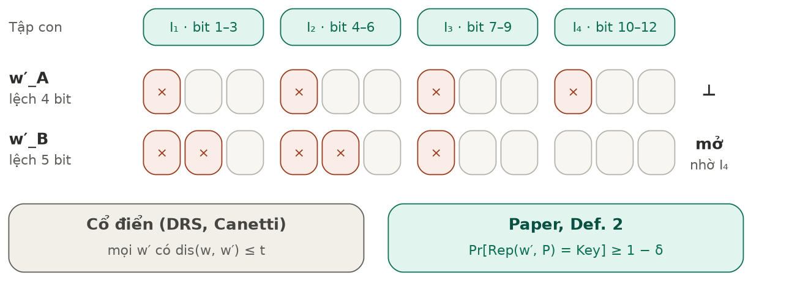
w′A is 4 bits off but every subset is hit → ⊥. w′B is 5 bits off but I₄ is clean → it opens.w′A lệch 4 bit nhưng tập con nào cũng dính lỗi → ⊥. w′B lệch 5 bit nhưng I₄ sạch → mở được.
- Correctness means the genuine user gets the Key back — not error correction. The paper fixes no bit; it changes the promise.Correctness = người thật lấy lại được Key, không phải error correction. Paper không sửa bit nào, chỉ sửa "lời hứa".
- This is a relaxation [P, §2.1.1]: the usual definition promises that every reading a few bits off will open, wherever the noise comes from. The paper only promises that most real captures of the same eye will open.Đây là một sự nới lỏng [P, §2.1.1]: định nghĩa thông thường hứa mọi ảnh lệch ít bit đều mở được, bất kể nhiễu đến từ đâu. Paper chỉ hứa phần lớn ảnh chụp thật của cùng một mắt mở được.
- Why change: (1) subsets are fixed at Setup, so whether a pair opens is essentially decided in advance; (2) ζ-sampling only makes sense over the real distribution (good bits tend to err less); (3) it is directly measurable as TAR.Vì sao phải đổi: (1) tập con đã cố định ở Setup nên một cặp mở hay không gần như đã định sẵn; (2) ζ-sampling chỉ có nghĩa khi xét phân phối thật (bit tốt thường ít lỗi); (3) đo được trực tiếp bằng TAR.
[P, §2.1.1, §3, Def. 2]
(c) Security metric: from average to minimum, and a tighter bound(c) Thước đo bảo mật: trung bình → min, và siết cận
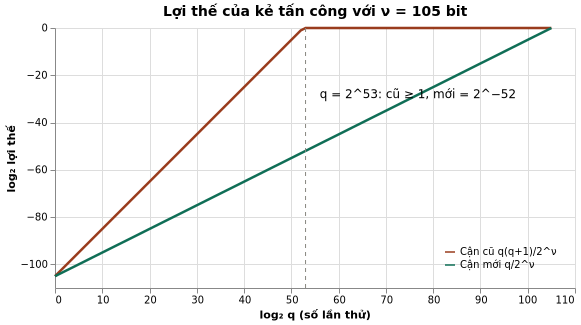
- Min-entropy H∞(X) = −log₂ maxₓ Pr[X = x]: the bit count equivalent to guessing right in one try.Min-entropy H∞(X) = −log₂ maxₓ Pr[X = x]: số bit tương đương xác suất đoán trúng trong một lần.
- Why Lemma 1 holds: a wrong guess only returns ⊥, so nothing is learnt; each try wins with at most 2^−ν, summed over q tries.Ý chính Lemma 1: thử sai chỉ nhận ⊥ nên không học thêm được gì; mỗi lần thử trúng tối đa 2^−ν, cộng dồn q lần.
- Tighter: with ν = 105 and q = 2⁵³ the old bound is ≥ 1 (useless), the new one is 2^−52 → almost twice as many certified bits [P, §4.1.2].Siết cận: với ν = 105, q = 2⁵³ cận cũ ≥ 1 (vô dụng), cận mới = 2^−52 → gần gấp đôi số bit được chứng nhận [P, §4.1.2].
- Why it is sound: the attacker chooses the easiest subset, so the figure that represents security must be the weakest one, not the average.Vì sao hợp lý: kẻ tấn công tự chọn tập dễ đoán nhất, nên con số đại diện cho bảo mật phải là tập yếu nhất, không phải trung bình.
- Consequence: FAR := total unlocks · 2^−ν [P, §2.1.2] — Lemma 1 applied in practice; numbers in Part 5.Hệ quả: FAR := tổng lượt mở · 2^−ν [P, §2.1.2] — chính là Lemma 1 áp vào thực tế; con số cụ thể ở Phần 5.
[P, §2.1.2, §3, §4.1, §4.1.1–4.1.2, Lemma 1]
(d) Choosing bits: from uniform to ζ-sampling(d) Chọn bit: từ chọn đều sang ζ-sampling
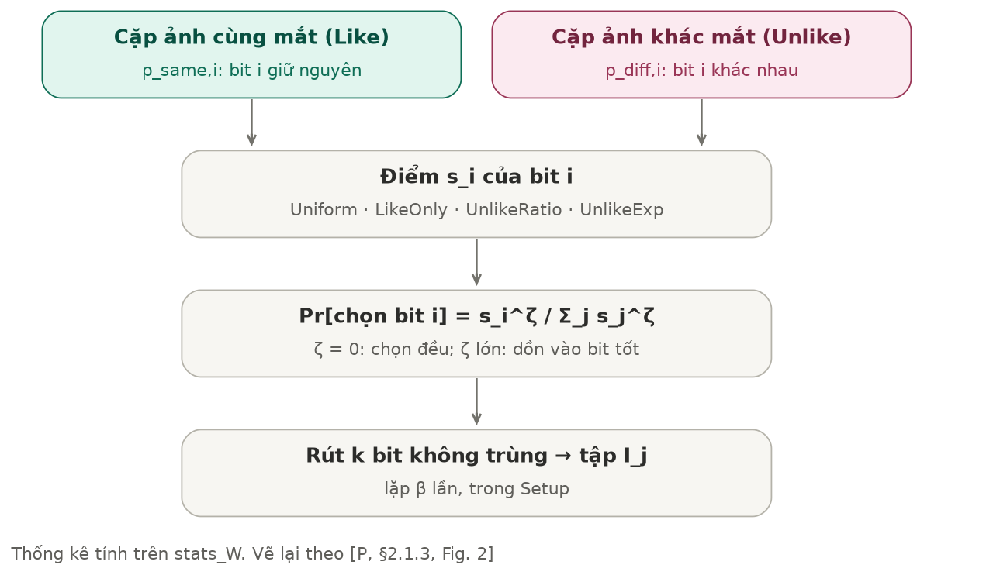
| Worked example: p_same =Ví dụ: p_same = | 0.99 | 0.95 | 0.80 | 0.60 |
|---|---|---|---|---|
| ζ = 0 (uniformchọn đều) | 25% | 25% | 25% | 25% |
| ζ = 2 | 34% | 31% | 22% | 12.5% |
| ζ = 10 | 56% | 37% | 6.6% | 0.4% |
- Trade-off: a large ζ makes each locker easier to open, but the subsets overlap more.Đánh đổi: ζ lớn → mỗi locker dễ mở hơn nhưng các tập con trùng nhau nhiều hơn.
- ζ only helps when the bits really differ in quality.ζ chỉ có ích khi các bit thật sự chênh lệch chất lượng.
[P, §2.1.3, Fig. 2]
The ζ-sampling vocabulary used in Part 5Bộ thuật ngữ ζ-sampling dùng ở Phần 5
| TermThuật ngữ | MeaningÝ nghĩa |
|---|---|
| Like / Unlike | Pairs of readings of the same eye / of different eyes (Daugman's naming — hence μUnlike in EntTest).Cặp ảnh cùng mắt / khác mắt (cách gọi của Daugman — nên EntTest có μUnlike). |
| psame,i | Pr[wᵢ = w′ᵢ | same eye] — how stable bit i is.Pr[wᵢ = w′ᵢ | cùng mắt] — độ ổn định của bit i. |
| pdiff,i | Pr[wᵢ ≠ w*ᵢ | different eyes] — how hard to guess bit i is. Both computed on stats_W.Pr[wᵢ ≠ w*ᵢ | khác mắt] — độ khó đoán của bit i. Cả hai tính trên stats_W. |
| Uniform | ζ = 0, every bit gets the same weight.ζ = 0, mọi bit cùng trọng số. |
| LikeOnly | sᵢ = psame,i — stability only.sᵢ = psame,i — chỉ xét độ ổn định. |
| UnlikeRatio | sᵢ = psame,i / max{pdiff,i, 1 − pdiff,i} — stability divided by how guessable the bit is.sᵢ = psame,i / max{pdiff,i, 1 − pdiff,i} — ổn định chia cho mức dễ đoán. |
| UnlikeExp | psame,i^(ζ / H∞(pdiff,i)), with H∞(p) = −log₂ max{p, 1 − p} — punishes guessable bits exponentially.psame,i^(ζ / H∞(pdiff,i)), với H∞(p) = −log₂ max{p, 1 − p} — phạt bit dễ đoán theo hàm mũ. |
| Single / Pairs | Score each bit, or each pair of bits (psame,i,j, pdiff,i,j) [P, §6.3, Table 2].Chấm điểm từng bit hay từng cặp bit (psame,i,j, pdiff,i,j) [P, §6.3, Table 2]. |
[P, §2.1.3, §5.2.1, §6.3, Fig. 2, Table 2]
The feature extractorFeature extractor
Why fix Block A: opening a locker is exponential in μVì sao phải sửa Khối A: xác suất mở locker giảm theo hàm mũ của μ
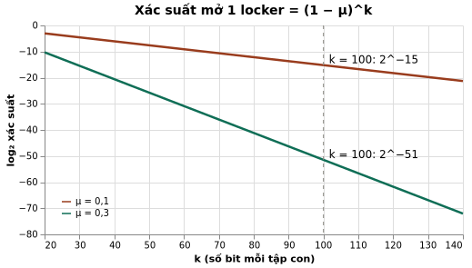
- Stable — the same eye differs little (low μ).Ổn định — cùng mắt ít lệch (μ thấp).
- Hard to guess — different eyes agree ≈ 50 % of the time.Khó đoán — khác mắt trùng ≈ 50%.
- Uniform quality — every bit is as good as the others.Đều chất lượng — bit nào cũng tốt như nhau.
- Bridge from Part 3: ζ-sampling only chooses among existing bits; to do better, make better bits.Cầu nối từ Phần 3: ζ-sampling chỉ chọn được trong số bit có sẵn; muốn tốt hơn phải làm ra bit tốt hơn.
- Example, k = 100: μ = 0.3 → 0.7¹⁰⁰ ≈ 2^−51; μ = 0.1 → 0.9¹⁰⁰ ≈ 2^−15. A small drop in μ makes lockers exponentially easier to open.Ví dụ k = 100: μ = 0,3 → 0,7¹⁰⁰ ≈ 2^−51; μ = 0,1 → 0,9¹⁰⁰ ≈ 2^−15. Giảm μ một chút → locker dễ mở hơn theo hàm mũ.
- Why not PCA/ICA: they only remove pairwise correlation, while iris bits correlate in larger groups [P, §1.0.1] → the paper trains a CNN aimed directly at the three wishes.Vì sao không dùng PCA/ICA: chỉ xoá tương quan theo cặp, còn tương quan giữa các bit iris nằm ở nhóm nhiều bit [P, §1.0.1] → paper huấn luyện CNN nhắm thẳng vào 3 điều ước.
[P, §1.0.1, §2.1.2]
One baseline, two designsBức tranh chung: một baseline, hai thiết kế
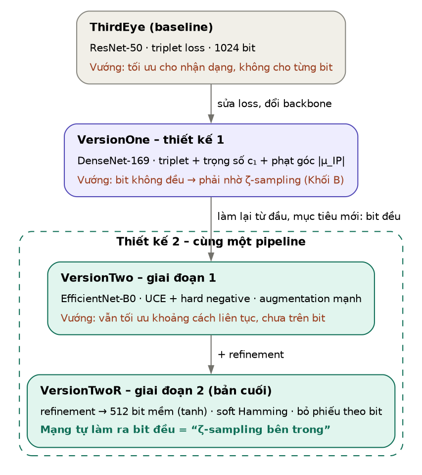
- The paper has two extractors, not three [P, §2.1.4, §6].Paper có 2 extractor, không phải 3 [P, §2.1.4, §6].
- VersionTwo and VersionTwoR are two stages of one pipeline; ClearEyes uses VersionTwoR.VersionTwo và VersionTwoR là 2 giai đoạn của cùng một pipeline; ClearEyes dùng VersionTwoR.
- Same goal — high TAR, low FAR. They differ in where the burden of picking good bits sits:Cùng mục tiêu — TAR cao, FAR thấp. Khác ở chỗ đặt gánh nặng chọn bit tốt:
- VersionOne → Block B (ζ-sampling).VersionOne → Khối B (ζ-sampling).
- VersionTwoR → the network itself.VersionTwoR → chính mạng nơ-ron.
[P, §2.1.4, §6]
ThirdEye → VersionOne: adding an angle to the triplet lossThirdEye → VersionOne: thêm góc vào triplet loss
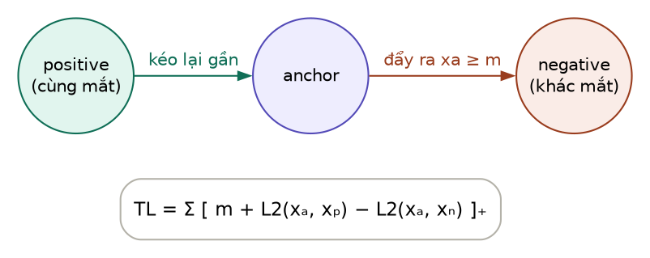
- ResNet-50 (ImageNet pre-trained) → trained as a classifier → head replaced by a 1,024-dim layer trained with triplet loss [P, §6.1–6.1.2].ResNet-50 (pre-train ImageNet) → học phân loại → thay đầu ra bằng lớp 1.024 chiều, huấn luyện bằng triplet loss [P, §6.1–6.1.2].
- Limitation: built for recognition (same person or not); it does not ask each bit to be stable or of uniform quality.Hạn chế: thiết kế cho nhận dạng (đúng người hay không), không đòi từng bit ổn định hay đều chất lượng.
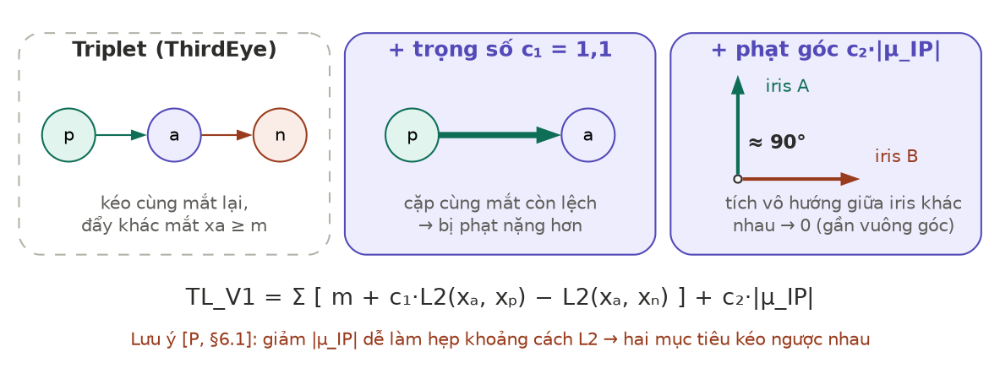
- DenseNet-169; c₁ = 1.1 punishes same-eye pairs that drift apart; μIP = mean inner product between different irises, c₂ = 2 → push them towards orthogonal (the angular-margin idea).DenseNet-169; c₁ = 1,1 phạt nặng cặp cùng mắt lệch nhau; μIP = tích vô hướng trung bình giữa các iris khác nhau, c₂ = 2 → ép chúng gần vuông góc (ý của angular margin).
- Bits are not of uniform quality — the paper: "produces features of different quality", hence "benefits from ζ-sampling". The choice of good bits is pushed to Block B, and the L2 and angle objectives pull against each other.Bit không đều chất lượng — paper: "produces features of different quality", vì thế "benefits from ζ-sampling". Việc chọn bit tốt bị đẩy sang Khối B; hai mục tiêu L2 và góc kéo ngược nhau.
[P, §6.1–6.1.2] · ThirdEye, BTAS 2019 [P-ref 42]
VersionTwo → VersionTwoR: two stages, trained directly on the bitsVersionTwo → VersionTwoR: hai giai đoạn, tối ưu thẳng trên bit
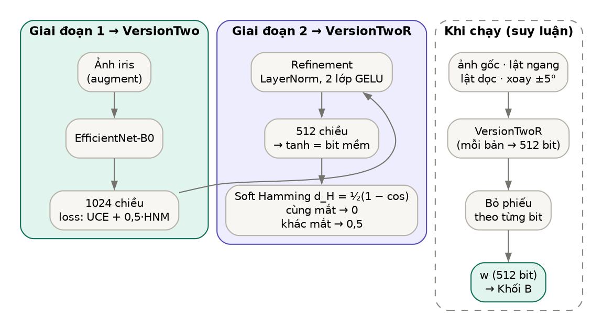
- New goal: bits of uniform quality — it "incorporates ideas from ζ-sampling" [P, §2.1.4]. Built from scratch, not a patch on VersionOne.Mục tiêu mới: bit đều chất lượng — "incorporates ideas from ζ-sampling" [P, §2.1.4]. Làm lại từ đầu, không sửa tiếp VersionOne.
- Stage 1 — VersionTwo: EfficientNet-B0, 1,024 dims; L = Luce-m + 0.5·Lhnm — same-eye pairs must beat different-eye pairs by a margin, plus a penalty on the most similar different eye (hard negative); augmentation: flips, rotation, blur, sharpening, occlusion, contrast.Giai đoạn 1 — VersionTwo: EfficientNet-B0, 1.024 chiều; L = Luce-m + 0,5·Lhnm — cặp cùng mắt phải giống hơn cặp khác mắt một margin, cộng phạt iris khác mắt giống nhất (hard negative); augmentation: lật, xoay, mờ, nét, che khuất, tương phản.
- Stage 2 — VersionTwoR: refinement → 512 dims → tanh (soft bits in [−1, 1]); dH = ½(1 − cos); L = Lpos + λneg·Lneg pulls the same eye → 0 and different eyes → 0.5.Giai đoạn 2 — VersionTwoR: refinement → 512 chiều → tanh (bit mềm trong [−1, 1]); dH = ½(1 − cos); L = Lpos + λneg·Lneg kéo cùng mắt → 0, khác mắt → 0,5.
- Why stage 2: binarisation has no gradient → tanh + soft Hamming let the network optimise the very bits the lockers see.Vì sao cần giai đoạn 2: nhị phân hoá không lấy đạo hàm được → tanh + soft Hamming cho phép tối ưu ngay trên bit, thứ locker thật sự thấy.
- At inference: original + horizontal/vertical flips + rotations of ±5° → per-bit vote, keep the most stable value.Khi chạy: ảnh gốc + lật ngang/dọc + xoay ±5° → bỏ phiếu theo từng bit, giữ giá trị ổn định nhất.
Part 3 selects good bits; VersionTwoR makes good bits.Phần 3 chọn bit tốt; VersionTwoR làm ra bit tốt.
[P, §2.1.4, §6.2]
The versions side by sideSo sánh các phiên bản
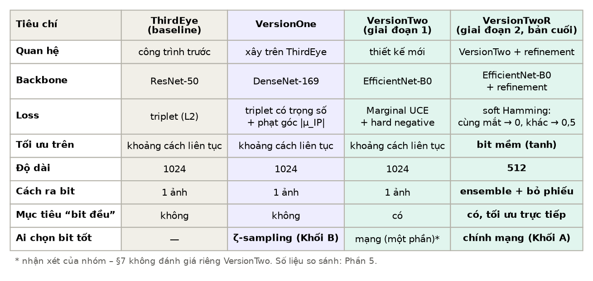
How do the two extractors compare on real numbers? → Part 5.Hai extractor này khác nhau thế nào trên số liệu thật? → Phần 5.
[P, §6, §7, Fig. 3]
Experiments & resultsThực nghiệm và kết quả
Data and split: train on left eyes, test on right eyesDữ liệu và cách chia: huấn luyện mắt trái, đo trên mắt phải
- IIT Delhi (IITD) [P, §5.1]: 224 people (176 men, 48 women), aged 14–55; 2,240 near-infrared images, 320×240. Left and right eyes count as two independent biometrics → 435 biometrics (224 left, 211 right).IIT Delhi (IITD) [P, §5.1]: 224 người (176 nam, 48 nữ), 14–55 tuổi; 2.240 ảnh hồng ngoại gần, 320×240. Mắt trái và phải là 2 sinh trắc độc lập → 435 sinh trắc (224 mắt trái, 211 mắt phải).
- Images are segmented (iris separated from background) following Hofbauer et al.; duplicates and featureless images removed as the dataset author advises.Ảnh được phân đoạn (tách vùng mống mắt khỏi nền) theo Hofbauer et al.; loại ảnh trùng và ảnh không có đặc trưng theo hướng dẫn của người tạo dataset.
- Class-disjoint split — no eye appears in two sets:Chia tách lớp — không mắt nào xuất hiện ở 2 tập:
- Train: all left eyes (as in ThirdEye) → trains the feature extractor.Train: toàn bộ mắt trái (giống ThirdEye) → huấn luyện feature extractor.
- stats_W: 40 of the 202 right eyes (20 %) → only for the per-bit statistics p_same, p_diff used by ζ-sampling.stats_W: 40 trong 202 mắt phải (20%) → chỉ dùng để tính thống kê từng bit p_same, p_diff cho ζ-sampling.
- Test: the remaining 162 right eyes → every table and figure of results (except the Fig. 3 histograms, which pool stats_W and test).Test: 162 mắt phải còn lại → mọi bảng và hình kết quả (trừ histogram Fig. 3 gộp stats_W + test).
| SetTập | EyesMắt | Used forDùng để |
|---|---|---|
| Train | 224 left eyes224 mắt trái | Train the CNN (VersionOne / VersionTwoR)Huấn luyện CNN (VersionOne / VersionTwoR) |
| stats_W | 40 right eyes (20 %)40 mắt phải (20%) | psame,i, pdiff,i → ζ-sampling at SetupTính psame,i, pdiff,i → ζ-sampling ở Setup |
| Test | 162 right eyes162 mắt phải | Entropy (EntTest), TAR, FARĐo entropy (EntTest), TAR, FAR |
The model learns from left eyes, subsets are chosen with 40 right eyes, and every number we will see is measured on the other 162 right eyes.Mô hình được huấn luyện trên mắt trái, tập con được chọn bằng 40 mắt phải, và mọi con số sắp xem đều đo trên 162 mắt phải còn lại.
[P, §5.1]
Measuring security: EntTest, Daugman's test turned into min-entropyĐo bảo mật: EntTest — phép đo của Daugman chuyển sang min-entropy
- Histogram of the fractional Hamming distance between readings of different eyes (the red histogram of [P, Fig. 3]).Histogram khoảng cách Hamming phân số giữa ảnh của các mắt khác nhau (histogram đỏ trong [P, Fig. 3]).
- Its mean μ and standard deviation σ.Tính trung bình μ và độ lệch chuẩn σ của histogram đó.
- Degrees of freedom — treat the distance as a binomial of dF coin flips:Bậc tự do — coi khoảng cách như phân phối nhị thức của dF lần tung đồng xu:
- Apply it to each subset Iᵢ separately (only the bits in Iᵢ).Áp dụng riêng cho từng tập con Iᵢ (chỉ dùng các bit trong Iᵢ).
- Assumption 2 [P, §5.2.1]: EntTest measures the min-entropy of the biometric distribution correctly — the paper's only statistical assumption.Assumption 2 [P, §5.2.1]: EntTest đo đúng min-entropy của phân phối sinh trắc — giả định thống kê duy nhất của paper.
- Limits [P, §5.2.2]: every entropy test is a heuristic; EntTest uses only two moments (μ, σ). NIST SP 800-22 always gave higher numbers, so the paper reports the lower, more cautious one.Hạn chế [P, §5.2.2]: mọi entropy test đều là heuristic; EntTest chỉ dùng 2 moment (μ, σ). NIST SP 800-22 luôn cho số cao hơn, nên paper báo con số thấp hơn (thận trọng).
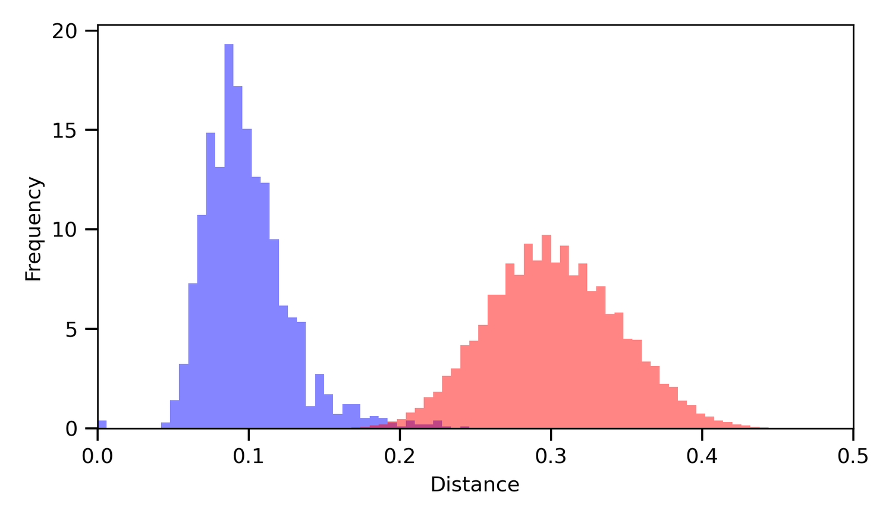
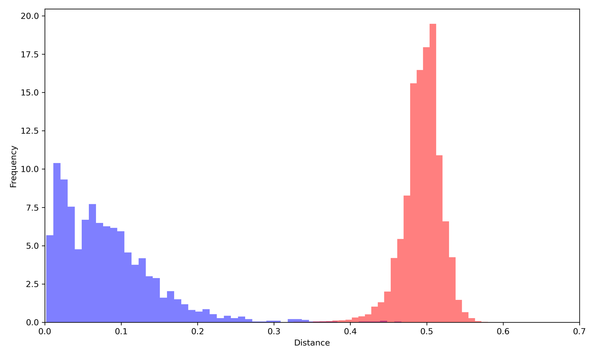
[P, §5.2.1–5.2.2, Fig. 3] · Daugman 2004 [P-ref 43]
Measuring the honest side: TAR and the parameter gridĐo phía người dùng thật: TAR và lưới tham số
- For each eye, pick one reading at random as the enrolment w*; the other readings are queries.Với mỗi mắt, chọn ngẫu nhiên 1 ảnh làm ảnh đăng ký w*; các ảnh còn lại làm truy vấn.
- A query succeeds if at least one subset Iᵢ matches w* exactly on its bits.Truy vấn thành công nếu có ít nhất 1 tập con Iᵢ trùng hoàn toàn với w* trên các bit của nó.
- TAR = successful queries / all queries.TAR = số truy vấn thành công / tổng số truy vấn.
It compares bits directly, without HMAC (ignoring HMAC-SHA256 collisions) → far faster to sweep the parameter grid.Phép tính so trực tiếp bit, không chạy HMAC (bỏ qua khả năng va chạm HMAC-SHA256) → quét lưới tham số nhanh hơn nhiều.
- k from 40 to 140, step 5.k từ 40 đến 140, bước 5.
- ζ ∈ {0, 0.5, 1, 2, 3, 5, 8, 10, 15, 20} (ζ = 0 is uniform).ζ ∈ {0; 0,5; 1; 2; 3; 5; 8; 10; 15; 20} (ζ = 0 là chọn đều).
- Three scores: LikeOnly / UnlikeRatio / UnlikeExp.Ba cách chọn: LikeOnly / UnlikeRatio / UnlikeExp.
- Promising settings run with β = 250K subsets, then keep the 200K with the highest entropy.Cấu hình hứa hẹn chạy với β = 250K tập con, rồi giữ 200K tập có entropy cao nhất.
- The test set has only 162 eyes: where TAR is counted per eye (multi-reading settings), one eye ≈ 0.6 points of TAR → gaps of 1–2 points between settings are within statistical noise.Tập test chỉ có 162 mắt: ở cấu hình nhiều ảnh (TAR tính theo mắt), 1 mắt ≈ 0,6 điểm % TAR → chênh 1–2 điểm % giữa hai cấu hình nằm trong sai số thống kê.
- TAR is computed without HMAC: reasonable, since an HMAC-SHA256 collision is negligible — but it also means TAR says nothing about real running time (measured separately in §5.5).TAR tính không qua HMAC: hợp lý vì xác suất HMAC-SHA256 va chạm không đáng kể, nhưng con số TAR không phản ánh thời gian chạy thật (đo riêng ở §5.5).
105 bits is EntTest on the weakest subset; TAR is the share of genuine readings that open at least one locker.105 bit là con số của EntTest trên tập con yếu nhất; TAR là tỉ lệ ảnh thật mở được ít nhất một locker.
[P, §5.2.3, §7]
Attacker side: the minimum costs ~5 bits — filtering wins them backPhía kẻ tấn công: đo bằng min mất ~5 bit, lọc tập yếu lấy lại
| k | ζ | entropy of single subsets (250K)entropy từng tập con (250K) | keep all 250Kgiữ cả 250K | keep best 200Kgiữ 200K tốt nhất | Observed FARFAR quan sát | ||||
|---|---|---|---|---|---|---|---|---|---|
| Min | Avg | Max | Ent | −log FAR | Ent | −log FAR | |||
| 70 | 3 | 62 | 66 | 70 | 62 | 41 | 65 | 44 | 0 |
| 90 | 8 | 79 | 84 | 88 | 79 | 58 | 83 | 62 | 0 |
| 110 | 3 | 95 | 101 | 107 | 95 | 74 | 100 | 79 | 0 |
| 115 | 2 | 100 | 106 | 112 | 100 | 79 | 105 | 84 | 0 |
[P, Table 4] (retyped). All rows use UnlikeExp. −log FAR = Ent − 20.5 because ClearEyes-M uses 2^20.5 lockers in total; observed FAR over all 250K lockers.(gõ lại). Mọi dòng dùng UnlikeExp. −log FAR = Ent − 20,5 vì ClearEyes-M dùng tổng cộng 2^20,5 locker; FAR quan sát đo trên toàn bộ 250K locker.
- Trend 1: larger k → more entropy (min 62 → 100 as k goes 70 → 115): the attacker must guess more bits per locker.Xu hướng 1: k tăng thì entropy tăng (min 62 → 100 khi k từ 70 lên 115): kẻ tấn công phải đoán đúng nhiều bit hơn trong mỗi locker.
- Trend 2 — why the minimum: Min is 4–6 bits below Avg on every row (k = 115: average 106, weakest 100). Reporting the average, like Simhadri, would overstate security by ~5 bits.Xu hướng 2 — vì sao đo bằng min: Min thấp hơn Avg 4–6 bit ở mọi dòng (k = 115: trung bình 106, tập yếu nhất 100). Báo trung bình như Simhadri sẽ thổi phồng ~5 bit.
- Trend 3 — filtering: dropping the 50K weakest subsets lifts the min by 3–5 bits (62→65, 79→83, 95→100, 100→105) while TAR drops only ~0.01–0.02 [P, Table 5].Xu hướng 3 — lọc tập yếu: bỏ 50K tập yếu nhất tăng min thêm 3–5 bit (62→65, 79→83, 95→100, 100→105) trong khi TAR chỉ giảm ~0,01–0,02 [P, Table 5].
- Result: 105 bits; FAR = unlocks × 2^−105 → −log FAR ≈ 105 − 17.6 ≈ 87 (ClearEyes), ≈ 84 (ClearEyes-M).Kết luận: 105 bit; FAR = số lượt mở × 2^−105 → −log FAR ≈ 105 − 17,6 ≈ 87 (ClearEyes), ≈ 84 (ClearEyes-M).
- The best 200K are picked by entropy measured on the test set itself → 105 may be slightly optimistic. (Our demo: the published subsets still give 105.4 bits on other data.)Giữ 200K tập tốt nhất dựa trên entropy đo trên chính tập test → 105 có thể hơi lạc quan. (Demo của nhóm: tập con công bố vẫn cho 105,4 bit trên dữ liệu khác.)
- Observed FAR = 0 on ≈ 26,000 impostor pairs only bounds FAR ≲ 2^−13 (rule of three); the 84 bits come from EntTest, not from observation.FAR quan sát = 0 trên ≈ 26.000 cặp khác mắt chỉ cho cận FAR ≲ 2^−13 (quy tắc 3); 84 bit đến từ EntTest, không đến từ quan sát.
[P, §2.1.2, §7.1, §7.1.1, Table 4, Table 5]
Honest side, VersionOne: ζ-sampling helpsPhía người dùng thật, VersionOne: ζ-sampling có ích
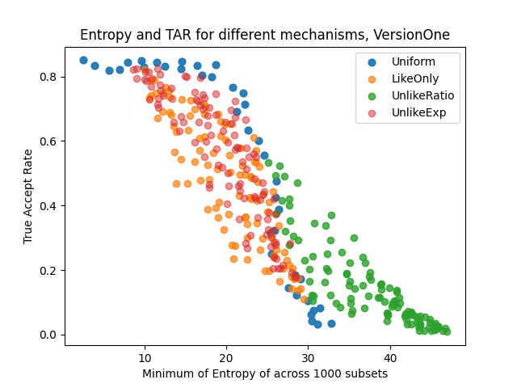
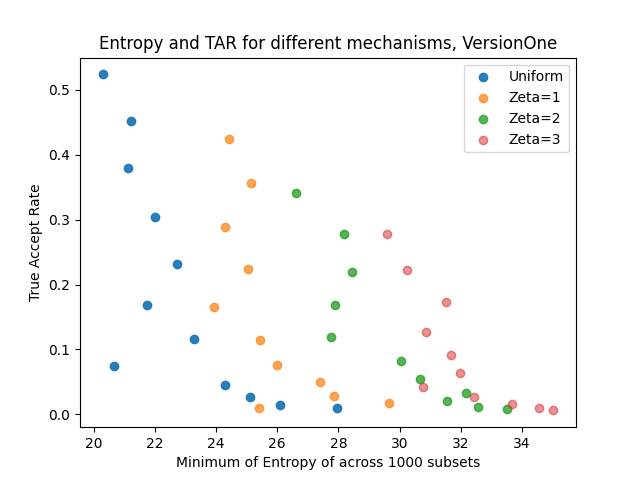
| Entropy ≥Entropy ≥ | Uniform (k, TAR) | LikeOnly (k, ζ, TAR) | UnlikeRatio (k, ζ, TAR) | UnlikeExp (k, ζ, TAR) |
|---|---|---|---|---|
| 20 | 105, 0.64 | 105, 3, 0.72 | 105, 0.5, 0.57 | 110, 5, 0.65 |
| 26 | 140, 0.29 | 130, 0.5, 0.37 | 105, 1, 0.52 | 130, 0.5, 0.34 |
| 28 | 150, 0.22 | 160, 1, 0.18 | 105, 2, 0.47 | 155, 2, 0.21 |
| 30 | 160, 0.13 | – | 105, 3, 0.37 | – |
| 40 | – | – | 115, 10, 0.14 | – |
[P, Table 2] (excerpt) — VersionOne, single bits, best TAR per entropy level. "–": no setting reaches it.(trích) — VersionOne, bit đơn, TAR tốt nhất ở mỗi mức entropy. "–": không cấu hình nào đạt.
- Reading Fig. 4: x = min entropy over 1,000 subsets, y = TAR; each dot is one (k, ζ). All dots lie on a falling band — more security bits, lower TAR.Đọc Fig. 4: trục x = min entropy trên 1.000 tập con, trục y = TAR; mỗi điểm là một cặp (k, ζ). Mọi điểm nằm trên một dải đi xuống — càng nhiều bit bảo mật, TAR càng thấp.
- UnlikeRatio (green) sits to the right → at the same TAR it reaches more entropy than uniform; LikeOnly keeps TAR high but gives up entropy.UnlikeRatio (xanh lá) lệch phải → ở cùng TAR đạt entropy cao hơn chọn đều; LikeOnly giữ TAR cao nhưng mất entropy.
- Fig. 5: as β grows, uniform sampling meets weak subsets more often, so its min entropy falls fast; ζ-sampling keeps entropy better. The effect is clearest for small β — but the very highest TARs still need a small ζ for subset diversity.Fig. 5: β tăng thì chọn đều càng dễ gặp tập yếu nên min entropy tụt nhanh; ζ-sampling giữ entropy tốt hơn. Hiệu quả rõ nhất khi β nhỏ — nhưng TAR lớn nhất vẫn cần ζ nhỏ để tập con đa dạng.
- Negative result: sampling pairs of bits is no better than single bits (higher-order correlation), and needs 1M parameters instead of 2K.Kết quả âm: lấy mẫu theo cặp bit không tốt hơn bit đơn (tương quan bậc cao), lại tốn 1M tham số thay vì 2K.
[P, §7, Fig. 4, Fig. 5, Table 2]
Honest side, VersionTwoR: the new extractor changes the picturePhía người dùng thật, VersionTwoR: extractor mới thay đổi bức tranh
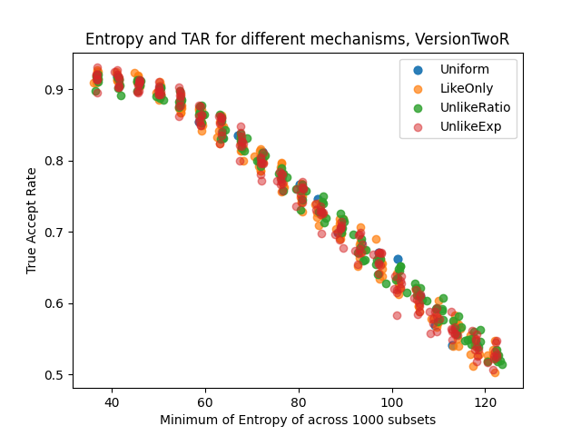
| Entropy ≥Entropy ≥ | LikeOnly (k, ζ, TAR) | UnlikeRatio (k, ζ, TAR) | UnlikeExp (k, ζ, TAR) |
|---|---|---|---|
| 20 | 40, 0.5, 0.93 | 40, 3, 0.92 | 40, 8, 0.93 |
| 60 | 70, 8, 0.86 | 70, 2, 0.87 | 70, 3, 0.86 |
| 80 | 90, 8, 0.77 | 90, 1, 0.77 | 90, 2, 0.77 |
| 90 | 105, 0.5, 0.71 | 105, 2, 0.70 | 105, 5, 0.70 |
| 100 | 115, 2, 0.64 | 115, 3, 0.65 | 115, 0, 0.66 |
[P, Table 3] (excerpt) — the three methods are almost equal at every entropy level.(trích) — ba cách chọn gần như bằng nhau ở mọi mức entropy.
- The paper's explanation: the Pearson correlation of per-bit p_same between stats_W and test is only 0.14 for VersionTwoR vs 0.83 for VersionOne → the bits are of uniform quality; a bit that looks good on stats_W need not stay good on test, so ζ has nothing to prefer.Giải thích của paper: tương quan Pearson của p_same từng bit giữa stats_W và test chỉ 0,14 với VersionTwoR, so với 0,83 với VersionOne → bit "đều chất lượng"; bit trông tốt ở stats_W chưa chắc còn tốt ở test, nên ζ không còn gì để ưu tiên.
- Two extractors compared: VersionOne reaches at most ~40 bits (TAR 0.14); VersionTwoR reaches ≥ 100 bits at TAR 0.64–0.66, and ≥ 40 bits at 0.92–0.93.So sánh 2 extractor: VersionOne tối đa ~40 bit (TAR 0,14); VersionTwoR đạt ≥ 100 bit với TAR 0,64–0,66, và ≥ 40 bit với 0,92–0,93.
ζ-sampling rescues a weak extractor; with a good one, uniform is enough — what makes 105 bits is the extractor.ζ-sampling cứu được extractor yếu; với extractor tốt thì chọn đều cũng đủ — cái làm nên 105 bit là extractor.
[P, §7, Fig. 6, Table 3]
Final operating point: 105 bits, 92 % with 3 + 2 readingsĐiểm vận hành cuối: 105 bit, 92% với 3 + 2 ảnh
| k | ζ | all 250K subsetscả 250K tập con | best 200K subsets200K tập tốt nhất | ||||||||
|---|---|---|---|---|---|---|---|---|---|---|---|
| Ent | 1–1 | 1–4 | 2–3 | 3–2 | Ent | 1–1 | 1–4 | 2–3 | 3–2 | ||
| 70 | 3 | 62 | 0.85 | 0.97 | 1.00 | 0.99 | 65 | 0.84 | 0.97 | 1.00 | 0.99 |
| 90 | 8 | 79 | 0.77 | 0.94 | 0.98 | 0.99 | 83 | 0.74 | 0.93 | 0.98 | 0.98 |
| 110 | 3 | 95 | 0.67 | 0.85 | 0.93 | 0.94 | 100 | 0.64 | 0.84 | 0.93 | 0.92 |
| 115 | 2 | 100 | 0.65 | 0.84 | 0.92 | 0.93 | 105 | 0.64 | 0.82 | 0.91 | 0.92 |
[P, Table 5] (retyped). "1–4" = 1 enrolment reading, 4 authentication readings. Highlighted: the final ClearEyes-M configuration.(gõ lại). "1–4" = 1 ảnh đăng ký, 4 ảnh xác thực. Ô tô vàng: cấu hình cuối ClearEyes-M.
- TAR–entropy line (Table 3): ≥ 20 bits → TAR ≈ 0.93; ≥ 80 → 0.77; ≥ 100 → 0.64–0.66. Between 60 and 100 bits, every 20 extra bits "cost" ~10 TAR points.Đường TAR – entropy (Table 3): ≥ 20 bit → TAR ≈ 0,93; ≥ 80 → 0,77; ≥ 100 → 0,64–0,66. Vùng 60–100 bit, mỗi 20 bit thêm "tốn" ~10 điểm % TAR.
- Several readings [P, §7.2]: 5 readings split between enrolment and authentication; success if any authentication reading opens a locker of any enrolment reading. Uses reusability: each enrolment reading gets its own 200K lockers with the same Key. Up to +0.28 TAR.Nhiều lần chụp [P, §7.2]: 5 ảnh chia giữa đăng ký và xác thực; thành công nếu bất kỳ ảnh xác thực nào mở được locker của bất kỳ ảnh đăng ký nào. Tận dụng tính reusable: mỗi ảnh đăng ký có 200K locker riêng, cùng Key. TAR tăng tới +0,28.
- ClearEyes-M: k = 115, ζ = 2, 200K → 105 bits, TAR 0.64 (1–1) → 0.92 (3–2); cost: Gen ×3 (600K lockers), Rep ×6 (up to 1.2M HMACs).ClearEyes-M: k = 115, ζ = 2, 200K → 105 bit, TAR 0,64 (1–1) → 0,92 (3–2); cái giá: Gen chậm ×3 (600K locker), Rep chậm ×6 (tới 1,2M lượt HMAC).
- (90, 8): 83 bits with TAR 0.98 → meets NIST (95 %) and FIDO (97 %) biometric requirements [P, §8].(90, 8): 83 bit với TAR 0,98 → vượt ngưỡng NIST (95%) và FIDO (97%) cho xác thực sinh trắc [P, §8].
- Same 5 readings, but enrolling more pays off: 1–4 gives 0.82, 3–2 gives 0.92 (k = 115). 1–4 has 4 pairs and one bad enrolment image ruins them all; 3–2 has 6 pairs and a spare on the enrolment side.Cùng 5 ảnh nhưng đăng ký nhiều lợi hơn: 1–4 chỉ 0,82, 3–2 đạt 0,92 (k = 115). 1–4 có 4 cặp, ảnh đăng ký xấu là hỏng hết; 3–2 có 6 cặp và có "dự phòng" ở phía đăng ký.
- 3 captures at enrolment happen once; 2 at every unlock is noticeable, though a phone camera can grab several frames in one look. Not measured on a real phone.Chụp 3 lần khi đăng ký chỉ làm một lần; 2 lần mỗi lần mở khoá là đáng kể, dù camera điện thoại có thể lấy nhiều khung hình trong một lần nhìn. Paper chưa đo trên điện thoại thật.
92 % comes from letting 3 enrolment and 2 authentication readings try together — at the price of a 3× slower Gen and 6× slower Rep.92% đến từ việc cho 3 ảnh đăng ký và 2 ảnh xác thực cùng thử — đổi lại Gen chậm 3 lần, Rep chậm 6 lần.
[P, §7.2, §8, Table 1, Table 3, Table 5]
From 26 bits and 204 s to 105 bits and 0.2 sTừ 26 bit, 204 giây lên 105 bit, 0,2 giây
| Simhadri et al. | ClearEyes | ClearEyes-M | |
|---|---|---|---|
| Lockers βSố locker β | 1,000,000 | 200,000 | 600,000 |
| Subset size kKích thước tập con k | 43 | 115 | 115 |
| Readings enrol / authẢnh đăng ký / xác thực | 1 / 1 | 1 / 1 | 3 / 2 |
| Helper dataDung lượng helper data | 96 MB | 7 MB | 19 MB |
| Security metricThước đo bảo mật | avg. of 10 subsetsTB của 10 tập | min of allmin mọi tập | min of allmin mọi tập |
| Security (bits)Bảo mật (bit) | 26 (claims 32tự báo 32) | 105 | 105 |
| −log(est. FARFAR ước lượng) | 6 | 87 | 84 |
| Create subsets (Setup)Tạo tập con (Setup) | 412 s | 7 s | 22 s |
| Enrol (Gen)Đăng ký (Gen) | 204 s | 0.2 s | 0.5 s |
| Authenticate (Rep)Xác thực (Rep) | 17.3 s / 0.8 s* | 0.16 s | 0.98 s |
| Mean bit error μTỉ lệ lỗi bit μ | 0.32 | 0.08 | 0.08 |
| log₂(est. TAR per lockerTAR ước lượng / locker) | −23.9 | −12.6 | −12.6 |
| TAR | 0.60 | 0.64 | 0.92 |
[P, Table 1] (retyped, shortened). * 17.3 s with Simhadri's code, 0.8 s with the paper's new code.(gõ lại, rút gọn). * 17,3 s với code gốc của Simhadri, 0,8 s khi chạy bằng code mới của paper.
- Timing [P, §2.1.2]: C + OpenSSL HMAC, one thread of an Intel i9-13900H laptop, 200K lockers, 10 runs: Setup 7.12 s (once), Gen 0.203 s, Rep 0.161 s. ClearEyes-M stays under 1 s for both.Đo thời gian [P, §2.1.2]: C + HMAC của OpenSSL, 1 luồng Intel i9-13900H (laptop), 200K locker, 10 lần chạy: Setup 7,12 s (1 lần), Gen 0,203 s, Rep 0,161 s. ClearEyes-M vẫn dưới 1 s cho cả hai.
- Overall gain: +73 bits vs the claimed 32, +79 vs the re-measured 26; TAR rises (0.60 → 0.64, 0.92 with several readings); storage 96 → 7 MB; Gen 204 → 0.2 s.Tổng kết: +73 bit so với 32 tự báo, +79 so với 26 đo lại; TAR tăng (0,60 → 0,64, 0,92 với nhiều ảnh); dung lượng 96 → 7 MB; Gen 204 → 0,2 s.
- Root cause: μ falls from 0.32 to 0.08 thanks to the new extractor → each locker is ~2¹¹ times easier to open (−23.9 → −12.6) although each subset is 2.7× longer (43 → 115 bits).Gốc của cải thiện: μ giảm từ 0,32 xuống 0,08 nhờ extractor mới → mỗi locker dễ mở hơn ~2¹¹ lần (−23,9 → −12,6) dù mỗi tập con dài gấp 2,7 lần (43 → 115 bit).
- Table 1 predicts 2^17.6 × 2^−12.6 ≈ 32 openable lockers, yet TAR is only 64 %: errors are not even across captures — one bad image closes every locker (see our demo, §6.2).Theo Table 1, người thật kỳ vọng mở được 2^17,6 × 2^−12,6 ≈ 32 locker, vậy mà TAR chỉ 64%: lỗi không đều giữa các lần chụp — một ảnh xấu làm hỏng mọi locker (xem demo, §6.2).
- 7 MB ≈ 200K × 32 bytes: the code does not store a separate 512-bit hᵢ per locker as Fig. 1 describes (that would be 19.2 MB) — the C code uses one fixed HMAC key + locker index.7 MB ≈ 200K × 32 byte: bản cài đặt không lưu riêng hᵢ 512 bit cho từng locker như Fig. 1 (nếu lưu sẽ là 19,2 MB) — code C dùng 1 khoá HMAC cố định + chỉ số locker.
[P, §2.1.2, Table 1]
Demo
Demo setup: the authors' code, re-run on synthetic irisesThiết lập demo: code của tác giả, chạy lại trên iris tổng hợp
| Repo feap (GPL-3.0)Repo feap (GPL-3.0) | What it doesChức năng |
|---|---|
| feap-fe | Python: train and extract features from segmented iris images → 512-bit vector. Not run — needs the licensed IITD images.Python: huấn luyện và trích đặc trưng từ ảnh iris đã phân đoạn → vector 512 bit. Không chạy — cần ảnh IITD có license. |
| lsh-lock | Rust: ζ-sampling, entropy (EntTest, analyze) and TAR (tar, tar-multi).Rust: ζ-sampling, đo entropy (EntTest, lệnh analyze) và TAR (tar, tar-multi). |
| sample-lock | C + OpenSSL: real sample-then-lock with HMAC-SHA256 — store (Gen), verify (Rep).C + OpenSSL: sample-then-lock thật bằng HMAC-SHA256 — store (Gen), verify (Rep). |
| params/ | The paper's published subsets for (70, 3), (90, 8), (110, 3), (115, 2) — 200K each.Các tập con đã công bố cho (70, 3), (90, 8), (110, 3), (115, 2) — mỗi cấu hình 200K. |
- Data: IITD needs a licence, so the authors publish synthetic iris embeddings made with the same pipeline: 200 eyes × 5 readings = 1,000 vectors of 512 bits (the release note says "400 classes" — it does not match). The authors warn synthetic data scores slightly better than IITD.Dữ liệu: IITD cần license nên tác giả công bố embedding iris tổng hợp sinh bằng cùng pipeline: 200 mắt × 5 ảnh = 1.000 vector 512 bit (ghi chú release viết "400 classes" — không khớp). Tác giả lưu ý dữ liệu tổng hợp cho kết quả nhỉnh hơn IITD.
- Split like the paper: 40 eyes (20 %) stats_W, 160 eyes test, random with seed 2026, class-disjoint.Chia như paper: 40 mắt (20%) stats_W, 160 mắt test, ngẫu nhiên với seed 2026, tách lớp.
- Machine: Apple M5 (10 cores), 16 GB; Rust 1.92, clang 17, OpenSSL 3.6, Python 3.14 + numpy.Môi trường: Apple M5 (10 nhân), 16 GB; Rust 1.92, clang 17, OpenSSL 3.6, Python 3.14 + numpy.
Backup scripts we wrote: fe_fig1.py (Gen/Rep exactly as Fig. 1), bit_stats.py, make_figures.py.Script dự phòng nhóm viết: fe_fig1.py (Gen/Rep đúng Fig. 1), bit_stats.py, make_figures.py.
github.com/whyamey/feap [P-ref 59] · commit feap 1d63744, lsh-lock fcf8685, sample-lock c8c2278
What we had to fix to make it runNhững gì nhóm phải xử lý để chạy được
| ProblemVấn đề | What we didCách nhóm xử lý | MeaningÝ nghĩa |
|---|---|---|
| Embedding files end with a newline → lsh-lock analyze panics while parsing numbersFile embedding kết thúc bằng ký tự xuống dòng → lsh-lock analyze panic khi đọc số | Normalise the data (strip whitespace, check 512 bits per reading) — no change to the authors' codeChuẩn hoá dữ liệu (bỏ khoảng trắng, kiểm tra đủ 512 bit/ảnh) — không sửa code tác giả | Release and tool disagree on formatRelease và tool không khớp định dạng |
| README uses --dimensions 512, which analyze and tar-multi do not accept; -t means both --templates and --triesREADME ghi --dimensions 512 nhưng analyze, tar-multi không có tuỳ chọn này; -t dùng cho cả --templates và --tries | Use the long option names (--templates, --tries)Dùng đúng tên tuỳ chọn dài (--templates, --tries) | Docs out of dateTài liệu chưa cập nhật |
| correlate pairs same-eye readings by two independent random draws → sometimes compares a reading with itselfcorrelate ghép cặp cùng mắt bằng 2 lần chọn ngẫu nhiên độc lập → đôi khi so 1 ảnh với chính nó | Compute p_same, p_diff in Python on distinct pairs only (the definition in [P, §4.2])Tự tính p_same, p_diff bằng Python chỉ trên các cặp ảnh khác nhau (đúng định nghĩa [P, §4.2]) | The tool inflates p_samep_same của tool bị đẩy lên |
| sample-lock verify checks against a key read from crypto_key.bin and uses one fixed HMAC key for every lockersample-lock verify so kết quả với khoá đọc từ file crypto_key.bin; dùng 1 khoá HMAC cố định cho mọi locker | Keep the C version for timing; add fe_fig1.py that follows Fig. 1 (128-bit zero check, own hᵢ)Giữ bản C để đo tốc độ; viết thêm fe_fig1.py đúng Fig. 1 (kiểm tra 128 bit 0, hᵢ riêng) | Research code — the verifier must already know the keyCode nghiên cứu — bên xác thực cần biết sẵn khoá |
| Makefile assumes gcc + -march=native -flto (Linux)Makefile dùng gcc + -march=native -flto (Linux) | Build with clang + Homebrew OpenSSLBuild bằng clang + OpenSSL của Homebrew | Build configuration onlyChỉ là cấu hình build |
We did not just re-run the code — we checked it against the paper, and wrote our own Fig. 1 implementation where they differ.Nhóm không chỉ chạy lại code — mà còn đối chiếu với paper, và tự viết bản đúng Fig. 1 ở chỗ hai bên khác nhau.
README feap, lsh-lock, sample-lock · [P, §4.2, Fig. 1]
Demo clip: the whole run, replayed from a real recordingClip demo: toàn bộ lần chạy, phát lại từ bản ghi thật
Recorded withGhi bằng feap-demo/scripts/record_demo.py · K = play / pause, click a chapter to jumpK = phát / dừng, bấm vào một chương để nhảy tới · Video fileFile video: MP4 EN, MP4 VI
Scenario 1 — enrol → Key; same eye → same Key; other eye → ⊥Kịch bản 1 — đăng ký → Key; cùng mắt → đúng Key; mắt khác → ⊥
$ sample-lock store -b 70001/sample_1 # Gen Stored 200000 hashes · helper data 6,400,000 bytes key = 63e7fbc40d4c991f148b10973f0fbf98… $ sample-lock verify -b 70001/sample_3 # same eye, HD 0.033 OK (Match found at locker 1) Reproduced Key: 63e7fbc40d4c991f148b10973f0fbf98… $ sample-lock verify -b 70001/sample_2 # same eye, HD 0.162 Verification failed - no match found $ sample-lock verify -b 70002/sample_1 # other eye, HD 0.502 Verification failed - no match found # fe_fig1.py, ClearEyes-M style: enrol readings 1–3, authenticate with 4–5 enrol: 600000 lockers, 57.6 MB 0.94 s auth : sample_4 opened a locker of enrolment reading 2 -> Key matches 0.47 s
- Another eye (≈ 50 % of bits differ) always gives ⊥.Mắt khác (lệch ≈ 50% số bit) luôn ra ⊥.
- Reading 3 of the same eye (3.3 % off) opens a locker and returns the same Key ("locker 1" = the 2nd, counting from 0).Ảnh 3 cùng mắt (lệch 3,3%) mở được và trả về đúng Key ("locker 1" = locker thứ 2, đánh số từ 0).
- But readings 2, 4, 5 of the same eye (11–16 % off) open no locker → false reject.Nhưng ảnh 2, 4, 5 của cùng mắt (lệch 11–16%) không mở được locker nào → từ chối nhầm.
- With several readings, like ClearEyes-M, this eye is accepted — exactly the mechanism behind 0.64 → 0.92 in Table 5.Khi dùng nhiều ảnh như ClearEyes-M, mắt này được chấp nhận — đúng cơ chế làm TAR tăng 0,64 → 0,92 trong Table 5.
- Helper data: 200K × 32 bytes = 6.4 MB (Table 1: 7 MB); our Fig. 1 version also stores hᵢ → 19.2 MB.Helper data: 200K × 32 byte = 6,4 MB (Table 1: 7 MB); bản Python đúng Fig. 1 lưu thêm hᵢ → 19,2 MB.
Output of our demo (feap-demo/out)Output demo của nhóm (feap-demo/out) · [P, Fig. 1, Table 1, Table 5]
Scenario 2, attacker side: the published subsets keep 105 bits on other eyesKịch bản 2, phía kẻ tấn công: tập con công bố giữ 105 bit trên mắt khác
attackerkẻ tấn công lsh-lock analyze -i params/115_2_200.bin -t data/test -n 200000
| (k, ζ) | Paper (IITD)Paper (IITD) | Ours — minNhóm — min | avgTB | max | Δ |
|---|---|---|---|---|---|
| (70, 3) | 65 | 64.9 | 68.2 | 71.6 | −0.1 |
| (90, 8) | 83 | 83.2 | 87.2 | 91.6 | +0.2 |
| (110, 3) | 100 | 100.5 | 106.2 | 111.8 | +0.5 |
| (115, 2) | 105 | 105.4 | 110.9 | 115.9 | +0.4 |
Paper: "Ent – all 200K" of [P, Table 4] (162 IITD eyes). Ours: EntTest on the same 200K published subsets, 160 synthetic test eyes; 2–4 min per setting.Paper: cột "Ent – All 200K" của [P, Table 4] (162 mắt IITD). Nhóm: EntTest trên đúng 200K tập con công bố, 160 mắt tổng hợp; 2–4 phút mỗi cấu hình.
- Less than 1 bit apart in all four settings.Chênh dưới 1 bit ở cả 4 cấu hình.
- Min vs average gap ≈ 5.5 bits — the effect described in §5.2.Khoảng cách min–trung bình ≈ 5,5 bit — đúng hiện tượng §5.2.
- A good check of Lemma 1: subsets chosen independently of the enrolled value keep their security on a completely different set of eyes.Kiểm chứng tốt cho Lemma 1: tập con chọn độc lập với giá trị đăng ký vẫn giữ bảo mật trên một tập mắt hoàn toàn khác.
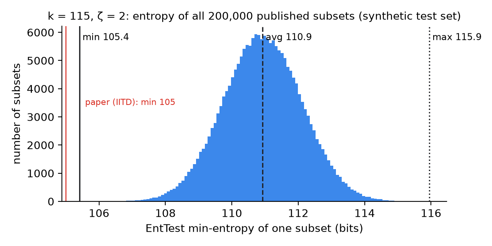
Our demoDemo của nhóm · [P, Table 4, Lemma 1]
Scenario 2, honest side: same shape as the paper, higher TARKịch bản 2, phía người dùng thật: cùng xu hướng với paper, TAR cao hơn
| (k, ζ) | Ent (paper / ourspaper / nhóm) | 1–1 | 1–4 | 2–3 | 3–2 | ||||
|---|---|---|---|---|---|---|---|---|---|
| paper | oursnhóm | paper | oursnhóm | paper | oursnhóm | paper | oursnhóm | ||
| (70, 3) | 65 / 65 | 0.84 | 0.92 ± 0.00 | 0.97 | 0.99 ± 0.01 | 1.00 | 1.00 ± 0.01 | 0.99 | 1.00 ± 0.01 |
| (90, 8) | 83 / 83 | 0.74 | 0.87 ± 0.01 | 0.93 | 0.98 ± 0.01 | 0.98 | 1.00 ± 0.01 | 0.98 | 1.00 ± 0.00 |
| (110, 3) | 100 / 100 | 0.64 | 0.76 ± 0.01 | 0.84 | 0.97 ± 0.00 | 0.93 | 0.99 ± 0.01 | 0.92 | 0.99 ± 0.01 |
| (115, 2) | 105 / 105 | 0.64 | 0.74 ± 0.01 | 0.82 | 0.96 ± 0.01 | 0.91 | 0.99 ± 0.01 | 0.92 | 0.98 ± 0.01 |
Paper: [P, Table 5], 200K columns (IITD, 162 eyes). Ours: synthetic data, 160 eyes, 5 runs each (mean ± sd) — lsh-lock tar (1–1) and tar-multi --tries 5 --base b.cột 200K (IITD, 162 mắt). Nhóm: dữ liệu tổng hợp, 160 mắt, 5 lần chạy (trung bình ± độ lệch chuẩn) — lsh-lock tar (1–1) và tar-multi --tries 5 --base b.
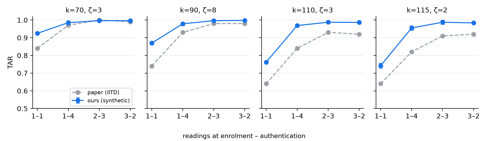
- Same trend: TAR falls as k grows, and rises sharply with more readings. (115, 2): 1–1 = 0.74 (paper 0.64), 3–2 = 0.98 (paper 0.92).Xu hướng giống paper: TAR giảm khi k tăng, tăng mạnh khi dùng nhiều ảnh. (115, 2): 1–1 = 0,74 (paper 0,64), 3–2 = 0,98 (paper 0,92).
- Higher TAR, as the authors warned: mean bit error μ = 0.065 here vs 0.08 on IITD.TAR cao hơn đúng như tác giả cảnh báo: μ trung bình 0,065 so với 0,08 của IITD.
- So our TAR does not re-confirm 92 %; the demo confirms the entropy figures and the shape of the trade-off.Vì vậy TAR của nhóm không khẳng định lại 92%; demo kiểm chứng con số entropy và hình dạng đánh đổi.
Our demoDemo của nhóm · [P, §5.2.3, Table 5]
Our own ζ-sampling: ζ does not raise entropy — it lowers TARNhóm tự chạy ζ-sampling: ζ không tăng entropy, còn làm giảm TAR
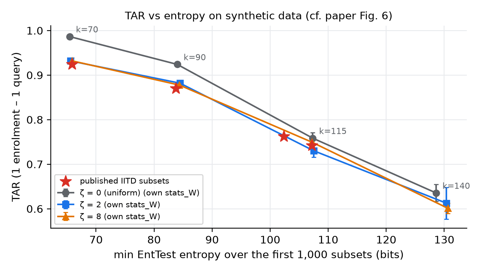
| k | ζ = 0 (uniformchọn đều) | ζ = 2 | ζ = 8 |
|---|---|---|---|
| 70 | 65.4 bit / 0.99 | 65.6 / 0.93 | 65.9 / 0.93 |
| 90 | 84.0 bit / 0.92 | 84.5 / 0.88 | 84.4 / 0.88 |
| 115 | 107.3 bit / 0.76 | 107.5 / 0.73 | 107.2 / 0.75 |
| 140 | 128.6 bit / 0.64 | 130.4 / 0.61 | 130.6 / 0.60 |
min entropy over the first 1,000 subsets / TAR 1–1 (mean of 3). UnlikeExp, 200K subsets each.min entropy trên 1.000 tập con đầu / TAR 1–1 (trung bình 3 lần). UnlikeExp, 200K tập con mỗi cấu hình.
- Entropy does not move with ζ at a fixed k — bits are equally good, so any choice gives the same security.Entropy không đổi theo ζ ở cùng k — các bit "tốt như nhau" nên chọn bit nào cũng ra cùng mức bảo mật.
- ζ lowers TAR: uniform is always equal or better (k = 70: 0.99 vs 0.93). Pearson of p_same between stats_W and test is −0.05 (paper: 0.14) → the "good bits" are noise; ζ crowds subsets onto them and they overlap more — the paper's own caveat: "achieving the largest TARs may require small ζ".ζ làm giảm TAR: chọn đều luôn bằng hoặc cao hơn (k = 70: 0,99 so với 0,93). Pearson của p_same giữa stats_W và test là −0,05 (paper: 0,14) → "bit tốt" thực chất là nhiễu; ζ dồn tập con vào đó nên trùng nhau nhiều hơn — đúng lưu ý của paper: "achieving the largest TARs may require small ζ".
- The published subsets (stars) sit on our ζ > 0 line.Tập con công bố (sao đỏ) nằm đúng trên đường ζ > 0 của nhóm.
ζ-sampling only helps when bit statistics carry over from stats_W to real use (as for VersionOne, Pearson 0.83).ζ-sampling chỉ có ích khi thống kê bit lặp lại được giữa stats_W và lúc dùng thật (như VersionOne, Pearson 0,83).
Our demoDemo của nhóm · [P, §7, Fig. 6]
Paper vs our re-run, at a glancePaper – nhóm chạy lại – chênh lệch – giải thích
| QuantityĐại lượng | Paper (IITD)Paper (IITD) | Ours (synthetic)Nhóm (tổng hợp) | Δ | WhyGiải thích |
|---|---|---|---|---|
| Min entropy, (115, 2), 200KMin entropy, (115, 2), 200K | 105 bit | 105.4 bit | +0.4 | Subsets independent of enrolment (Lemma 1)Tập con độc lập với giá trị đăng ký (Lemma 1) |
| Avg − min entropyTB − min entropy | ≈ 6 bit | 5.5 bit | ≈ | The minimum "costs" a few bitsĐo bằng min "mất" vài bit |
| TAR 1–1, (115, 2) | 0.64 | 0.74 | +0.10 | High-quality synthetic images: μ 0.065 vs 0.08Ảnh tổng hợp chất lượng cao: μ 0,065 vs 0,08 |
| TAR 3–2, (115, 2) | 0.92 | 0.98 | +0.06 | Same as above; multi-reading gain matchesNhư trên; hiệu ứng nhiều ảnh giống paper |
| Pearson p_same (stats_W vs test)Pearson p_same (stats_W vs test) | 0.14 | −0.05 | ≈ | Uniform-quality bits → ζ has little effectBit đều chất lượng → ζ ít tác dụng |
| Gen / Rep (200K lockers)Gen / Rep (200K locker) | 0.203 / 0.161 s | 0.109 / 0.015 s | Different CPU; ours includes reading the filesKhác CPU; số của nhóm gồm cả đọc file | |
| Rep that rejects (other eye)Rep từ chối (mắt khác) | – | 0.108 s | Must try all 200K lockersPhải thử hết 200K locker | |
| Helper dataDung lượng helper data | 7 MB | 6.4 MB | ≈ | 200K × 32 byte |
- Synthetic data cannot replace IITD: our TAR is higher, so the demo does not "re-prove" TAR 92 % — it checks the entropy, the shape of the TAR–entropy trade-off and the multi-reading effect.Dữ liệu tổng hợp không thay thế được IITD: TAR cao hơn paper, nên demo không "chứng minh lại" TAR 92% — mà kiểm chứng entropy, hình dạng đánh đổi TAR–entropy và hiệu ứng nhiều ảnh.
- The authors' code is research code (their README says so): fixed HMAC key, the verifier must know the key. Our Fig. 1 version shows the correct mechanism also runs fast (≈ 0.3–0.5 s in Python).Code của tác giả là code nghiên cứu (README cảnh báo): khoá HMAC cố định, bên xác thực cần biết sẵn khoá. Bản đúng Fig. 1 của nhóm cho thấy cơ chế đúng vẫn chạy nhanh (≈ 0,3–0,5 s bằng Python).
Timings: mean of 10 runs, one thread, Apple M5.Thời gian: trung bình 10 lần chạy, 1 luồng, Apple M5.
Our demoDemo của nhóm · [P, Table 1, Table 4, Table 5, §7]
Discussion & conclusionThảo luận và kết luận
105 bits is a conditional result105 bit là kết quả có điều kiện
Scope: bit statistics from 40 eyes, results on 162 eyes, all from IITD.Phạm vi: thống kê chọn bit dùng 40 mắt, kết quả test dùng 162 mắt, đều trong IITD.
- 105 bits is meaningful inside the model, assumptions and distribution studied. A different device, population or capture condition needs a new measurement.105 bit có ý nghĩa trong phạm vi mô hình, giả định và phân phối đang xét. Khi đổi thiết bị, dân số hoặc điều kiện thu ảnh, cần đo lại.
- An observed FAR of 0 on the dataset does not by itself prove a FAR as tiny as the entropy model implies.FAR quan sát bằng 0 trên dataset không tự chứng minh FAR cực nhỏ như cận suy ra từ mô hình entropy.
- Our synthetic demo illustrates the mechanism and the trends. Measuring entropy close to the paper's is extra evidence — not proof that EntTest is right or that the security carries over to every new distribution.Demo trên dữ liệu tổng hợp minh hoạ cơ chế và xu hướng. Đo được entropy gần paper là bằng chứng bổ sung — không chứng minh EntTest đúng hay mức bảo mật giữ nguyên trên mọi phân phối mới.
105 bits is a conditional result: it needs both a fitting cryptographic assumption and a trustworthy entropy estimate.105 bit là kết quả có điều kiện: cần cả giả định mật mã phù hợp và ước lượng entropy đáng tin cậy.
[P, §4.1, §5.1, §5.2.1–5.2.2]
Against the BTP criteria — and what deployment still needsĐối chiếu tiêu chí BTP và khả năng triển khai
| CriterionTiêu chí | What the work supportsĐiều công trình hỗ trợ | Be careful aboutĐiểm cần thận trọng |
|---|---|---|
| Irreversibility | Security analysis of the key given the helper data; the paper discusses privacyPhân tích bảo mật khoá khi biết helper data; paper thảo luận tính private | Key security ≠ protection against every way of recovering biometric informationKhông đồng nhất bảo mật khoá với mọi dạng chống khôi phục thông tin sinh trắc |
| Unlinkability | Related to the private / reusable propertiesCó liên hệ với tính private/reusable | Check the exact definition and guarantee before concludingCần kiểm tra định nghĩa và bảo đảm cụ thể trước khi kết luận |
| Renewability | Re-enrolling can produce a new KeyĐăng ký lại có thể tạo Key mới | A new key alone does not prove enrolments are unlinkableTạo khoá mới chưa tự chứng minh các bản đăng ký không thể liên kết |
| Performance | ClearEyes-M reaches TAR 92 %ClearEyes-M đạt TAR 92% | Needs 3 enrolment + 2 authentication readings; not measured on a real phoneCần 3 ảnh đăng ký, 2 ảnh xác thực; chưa đo trên điện thoại thật |
Our assessment (group note), based on [P, §3.0.1, §5.1, §8].Đánh giá của nhóm (nhóm nhận xét), dựa trên [P, §3.0.1, §5.1, §8].
- Robustness: no guarantee against tampered helper data yet — needed for deployment.Robustness: paper chưa có bảo đảm chống sửa helper data — cần xử lý khi triển khai.
- Data & devices: near-infrared iris on a limited dataset; wider tests on image quality and users are needed.Dữ liệu và thiết bị: iris hồng ngoại trên dataset giới hạn; cần thử nghiệm rộng hơn về chất lượng ảnh và người dùng.
- Private / reusable: discussed but not fully proven formally — present as discussed, not as a theorem.Private / reusable: được thảo luận nhưng chưa chứng minh hình thức đầy đủ — trình bày như thảo luận, không như định lý.
A clear step forward in parameters and performance in the lab; deployment still needs robustness, broader data and a better capture experience.Paper cho thấy bước tiến rõ về tham số và hiệu năng trong thí nghiệm; triển khai thực tế vẫn cần độ bền vững, dữ liệu rộng hơn và trải nghiệm thu ảnh.
[P, §3.0.1, §5.1, §8]
Three ideas — and the answer to "practical?"Ba ý chính và câu trả lời cho "practical?"
1 · Measure security by the weakest subset, with a tighter boundĐo bảo mật theo tập con yếu nhất, dùng bound chặt hơn
No average hiding a weak spot.Tránh một con số trung bình che đi điểm yếu.
2 · Choose subsets by bit qualityChọn tập con theo chất lượng bit
ζ-sampling helps when bit statistics are stable and differ enough to exploit.ζ-sampling có ích khi thống kê chất lượng bit đủ ổn định và còn khác biệt để khai thác.
3 · Design the feature extractor for key derivationThiết kế feature extractor cho sinh khoá
Fewer bit errors allow larger subsets while still authenticating.Giảm lỗi bit giúp dùng tập con lớn hơn mà vẫn duy trì khả năng xác thực.
Remember:Kết quả cần nhớ: ClearEyes 105 bits / TAR 64 %; ClearEyes-M 105 bits / TAR 92 % with 3 enrolment and 2 authentication readings.ClearEyes 105 bit / TAR 64%; ClearEyes-M 105 bit / TAR 92% với 3 ảnh đăng ký và 2 ảnh xác thực.
The paper's step forward is pairing a tighter security analysis with input features built for the job — bringing iris key derivation close to real deployment.Điểm tiến bộ của paper là kết hợp phân tích bảo mật chặt hơn với đặc trưng đầu vào phù hợp hơn, để đưa sinh khoá từ iris đến gần triển khai thực tế.
[P, §8]
Thank you — questions?Cảm ơn — mời thầy cô và các bạn đặt câu hỏi
What if EntTest is off by 20 %?Nếu EntTest đánh giá sai 20% thì còn bao nhiêu bit?
~32 lockers should open, yet TAR is only 64 %?Kỳ vọng mở được 32 locker mà TAR chỉ 64%?
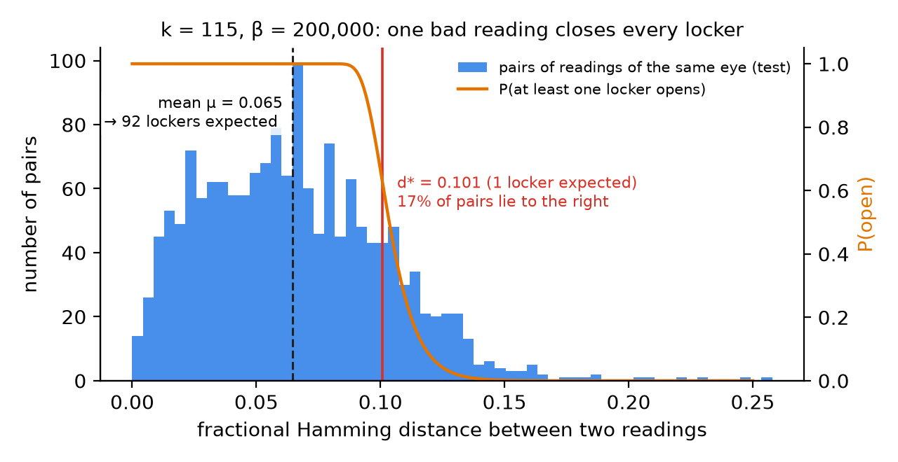
The subsets are public and shared — does that help the attacker?Tập con công khai, dùng chung — kẻ tấn công có lợi gì?
Why not code-offset / BCH?Vì sao không dùng code-offset/BCH?
How is a fuzzy extractor different from HE / MPC?Fuzzy extractor khác HE/MPC ở đâu?
Can it be used for faces on a phone right away?Có áp dụng ngay cho khuôn mặt trên điện thoại được không?
A 128-bit key but only 105 bits of security — a contradiction?Khoá 128 bit mà bảo mật chỉ 105 bit — có mâu thuẫn không?
Prepared answers — click a question to open it.Câu trả lời chuẩn bị sẵn — bấm vào câu hỏi để mở.
Question review — six questions, one per key ideaCâu hỏi ôn tập — sáu câu, mỗi ý chính một câu
| # | Idea checkedÝ được kiểm tra | § |
|---|---|---|
| 1 | FEQual: is there entropy left for a key?FEQual: còn entropy để sinh khoá không? calctính | 1.3 |
| 2 | Why the weakest subset mattersVì sao quan tâm tập con yếu nhất | 3.4c |
| 3 | What ζ = 0 meansζ = 0 nghĩa là gì | 3.4d |
| 4 | (1 − μ)k — opening one locker(1 − μ)k — mở một locker calctính | 4.1 |
| 5 | Where TAR 92 % comes fromTAR 92% đến từ đâu | 5.4 |
| 6 | The role of EntTestVai trò của EntTest | 5.1 |
ReferencesTài liệu tham khảo
- [P] A. Shukla, L. Demarest, B. Fuller, S. Ahmad, C. Manicke, A. Russell, S. Chen, “Fuzzy Extractors are Practical: Cryptographic Strength Key Derivation from the Iris,” in Proc. ACM CCS ’25, 2025, pp. 3605–3619, doi: 10.1145/3719027.3765098.
- R. Canetti, B. Fuller, O. Paneth, L. Reyzin, A. Smith, “Reusable fuzzy extractors for low-entropy distributions,” J. Cryptology, vol. 34, no. 1, pp. 1–33, 2021. [P-ref 48]
- S. Simhadri, J. Steel, B. Fuller, “Cryptographic authentication from the iris,” in Proc. ISC, 2019, pp. 465–485. [P-ref 45]
- K. Zhang, H. Cui, Y. Yu, “Facial template protection via lattice-based fuzzy extractors,” IACR ePrint 2021/1559. [P-ref 47]
- F. Zhu et al., “A secure and practical sample-then-lock scheme for iris recognition,” in Proc. ICPR, 2022, pp. 833–839. [P-ref 49]
- Y. Dodis, R. Ostrovsky, L. Reyzin, A. Smith, “Fuzzy extractors: How to generate strong keys from biometrics and other noisy data,” SIAM J. Comput., vol. 38, no. 1, pp. 97–139, 2008. [P-ref 14]
- J. Daugman, “How iris recognition works,” IEEE Trans. Circuits Syst. Video Technol., vol. 14, no. 1, pp. 21–30, 2004. [P-ref 43]
- B. Lynn, M. Prabhakaran, A. Sahai, “Positive results and techniques for obfuscation,” in Proc. EUROCRYPT, 2004, pp. 20–39. [P-ref 52]
- S. Ahmad, B. Fuller, “ThirdEye: Triplet based iris recognition without normalization,” in Proc. BTAS, 2019. [P-ref 42]
- A. Shukla, S. Ahmad, L. Demarest, B. Fuller, “Fuzzy extractors are practical,” 2025. github.com/whyamey/feap [P-ref 59]
- A. Juels, M. Wattenberg, “A fuzzy commitment scheme,” in Proc. ACM CCS, 1999.
- F. Hao, R. Anderson, J. Daugman, “Combining crypto with biometrics effectively,” IEEE Trans. Computers, vol. 55, no. 9, 2006. [P-ref 16]
- B. Fuller, X. Meng, L. Reyzin, “Computational fuzzy extractors,” in Proc. ASIACRYPT, 2013. [P-ref 18]